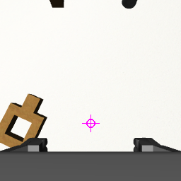
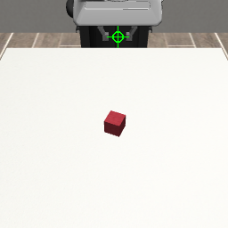
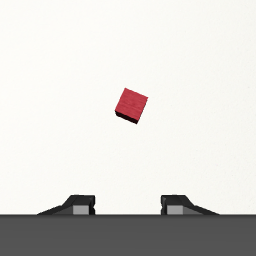
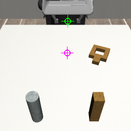

GPT-6 Astra 直接控制机械臂 · robomimic 测试面板
§S 状态与机器
§0 结论
- “方块进碗 19/20、精密插入 2/20”的分布被复现，但分界线在接口而不在任务。 Lift 在所有条件下饱和（连纯视觉 + 原始动作都能做）。Square 上原始动作 0/5：模型能把夹爪开到把手 1.5–2 cm 范围内，但抓 3.2 cm 宽的把手需要 <1 cm 精度，反复抓空，还把“夹爪停在 3.1 cm”误读成已抓住（其实是指尖顶到了桌面）。同一模型换航点接口 3/5，写成程序 5/5——它缺的不是眼睛和规划，而是把毫米级修正闭合起来的低层回路。
- 感知精度在 1–3 cm 量级，相机标定提示决定成败。 第一版 prompt 没有像素尺度，Can 航点条件 0/2；加入“洋红标记 = 抓取点在桌面的落点、1 px = x mm、+x/+y 在图中的方向”后同条件 5/5，模型开始按像素做视觉伺服。
- 写程序 > 闭环航点，因为程序会“下压”。 Square 的 code/proprio 5/5 高于 waypoint/proprio 3/5：程序一次给出“对准 → 降到销顶 → 继续下压到桌面上方 3.5 cm → 松开”，顺应性控制器 + 下压让 ±5 mm 误差也能滑入；闭环模式下模型倾向于“降到销顶先看一眼”，卡住后小步试探，往往在预算内收敛不了。
- 成本。 每次决策 ~22k token（其中 ~20k 是 Codex 自身系统提示）、20–45 s；一个 Square 航点回合约 4 分钟、9 万 token——它适合每几秒给一次航点或写一次程序，不适合 20 Hz 的控制回路。
| 任务 | 脚本上界 | 随机下界 | delta/proprio | waypoint/none | waypoint/proprio | code/proprio | code/privileged |
|---|---|---|---|---|---|---|---|
| Lift | 20/20 (100%, CI 84–100%) | 0/20 (0%, CI 0–16%) | 5/5 (100%, CI 57–100%) | 5/5 (100%, CI 57–100%) | 5/5 (100%, CI 57–100%) | 5/5 (100%, CI 57–100%) | 5/5 (100%, CI 57–100%) |
| Can | 20/20 (100%, CI 84–100%) | 0/20 (0%, CI 0–16%) | 4/5 (80%, CI 38–96%) | 4/5 (80%, CI 38–96%) | 5/5 (100%, CI 57–100%) | 3/5 (60%, CI 23–88%) | 5/5 (100%, CI 57–100%) |
| Square | 20/20 (100%, CI 84–100%) | 0/20 (0%, CI 0–16%) | 0/5 (0%, CI 0–43%) | - | 3/5 (60%, CI 23–88%) | 5/5 (100%, CI 57–100%) | 4/5 (80%, CI 38–96%) |
每格：成功数/回合数（成功率，Wilson 95% CI）。脚本上界 = 基于仿真真值的脚本专家走同一个控制器；随机下界 = 随机航点。多次运行同一条件时取回合数最多的一次。
§1 实验配置
仿真与任务
- robosuite 1.5 + MuJoCo 3.3.x，Franka Panda，BASIC 复合控制器（OSC_POSE，20 Hz，动作 7 维 ∈ [-1,1]：xyz 增量 ±5 cm 指令 / 实测 ±1.1 cm 每步，旋转 ±0.5 rad / 实测 ±5°，夹爪 +1 闭 −1 开）
- 任务：robomimic Lift（方块抬离桌面 4 cm）、Can（罐子放进右侧料箱指定格并松手离开）、Square（方螺母套进方销并滑到底，孔销单边间隙 6.75 mm）
- 相机：agentview（固定第三人称）+ robot0_eye_in_hand（腕部），默认 256×256；只在问模型时渲染
- 初始状态：robosuite 的 Generator 按回合就地重置，回合 i 在所有条件下物体位姿相同；reset 后空转 10 步让物体落定再给首帧
- 预算：Lift 250 步 / 10 次查询，Can 400 / 14，Square 500 / 16；delta 每次 20 步动作 × 10 次；code 最多 3 轮程序
模型侧
- GPT-6 Astra 通过 Codex CLI（
codex exec -m gpt-6-astra --output-schema schema.json -i cam1.png -i cam2.png --ignore-user-config -s read-only --ephemeral），prompt 从 stdin 传入，答案强制符合 JSON schema；reasoning effort medium - 三种控制接口：delta（原始动作块）、waypoint（末端航点 + P 控制器，容差 1 cm，夹爪命令保持 10 步）、code（
plan(scene)程序，受限命名空间执行，失败后带执行反馈重写） - 三档观测：none（只有图）、proprio（图 + 末端位姿 / 夹爪开度 / 末端像素位置 / 每相机 mm-per-px 与轴向 / 固定地标坐标；图上绿色 = 抓取点、洋红 = 其桌面落点）、privileged（再加物体真值位姿与是否抓住）
- 历史：最近 6 次查询的航点执行结果与其后的机器人状态以文字附在 prompt 里；code 接口额外附上一轮程序的执行反馈
- 对照：scripted 特权脚本专家（控制器上界）、random（下界），都走同一控制器；失败分类用特权信息事后判定
§2 Astra 的输入与输出（真实查询原文）
下面每个接口各取一次真实查询：左边两张图就是模型收到的图片（proprio 档位下带绿色/洋红标记），文本 prompt 与返回 JSON 原文未做删改。
航点接口（waypoint）· 与 RoboCurve 的 EEF tool call 同一类
模型看到两张图和下面的文字，返回 1–4 个末端航点；P 控制器逐个执行后再问。 来源：Square__waypoint__proprio__codex-gpt-6-astra__s0__20260907T145719Z ep00 查询 1，40.274 s，22862 token。


输入 · 文本 prompt（原文，3745 字符）
You are the controller of a Franka Panda robot arm in a MuJoCo simulation (robosuite, robomimic 'Square' task). You cannot run commands, read files or use tools: think, then answer only through the JSON schema. Respond in English.
TASK: Pick up the square nut by its handle and drop it onto the square peg so that the peg passes through the nut's square hole, then release and move the gripper away.
SCENE: A brown square nut (a square ring about 6 cm across with a straight handle sticking out of one side) lies on the table at z = 0.820. Two pegs stand near the front edge: the square peg at [0.230, 0.100, 0.850] (image bottom right) and a round grey peg at [0.230, -0.100, 0.850] (image bottom left). Peg tops are about 6 cm above the table. The nut's hole is only slightly larger than the peg, so the nut must be centred over the peg and rotated so the hole's edges are parallel to the peg's faces before lowering. Grasp the handle across its width: the fingers must close perpendicular to the handle direction.
SUCCESS: Success when the nut's centre is within 3 cm (x, y) of the square peg and has slid down to below 5 cm above the table, with the gripper released and more than 7 cm away.
COORDINATES: right-handed world frame in metres. The robot base is at [-0.56, 0.00, 0.91], behind the table. +x points from the robot toward the front camera, +y points to the robot's left, +z is up.
CAMERAS: Image 1 ('agentview', 256x256) is a fixed camera in front of the table looking back at the robot: the robot appears at the TOP of the image, world +x runs DOWN the image (toward the viewer) and world +y runs to the RIGHT. Image 2 ('robot0_eye_in_hand') is mounted on the gripper looking down along the fingers; the two fingertips are visible at the bottom edge.
GRIPPER: a parallel-jaw gripper pointing straight down. The reported end-effector position is the grasp point between the fingertips (fingertips reach ~2 cm below it). Fully open = 8 cm; 'close' grips anything narrower and keeps squeezing. yaw_deg = 0 means the fingers close along world y (they sit left/right of an object in image 1); yaw_deg = 90 closes along world x. The gripper is symmetric, so yaw is modulo 180.
PROGRESS: control step 0/500, query 1/16.
ROBOT STATE: grasp point at [-0.100, 0.008, 1.014] m, gripper yaw -0 deg, opening 7.7 cm (open).
The grasp point projects to pixel (u=132, v=41) in image 1.
CAMERA CALIBRATION at table height: image 1 (fixed camera): the table point straight below the grasp point is at pixel (u=131, v=103); there 1 px = 3.6 mm along world x (x increases downward in the image) and 2.5 mm along world y (y increases rightward); image 2 (moves with the gripper): the table point straight below the grasp point is at pixel (u=128, v=174); there 1 px = 1.6 mm along world x (x increases upward in the image) and 1.6 mm along world y (y increases leftward). Markers: the green crosshair in image 1 is the grasp point itself, the magenta crosshair in each image is the table point straight below it (where the fingers would land if you only descended). Use the pixel offset between an object and the magenta marker with the mm/px scale to compute the metric correction.
OUTPUT: 1 to 4 waypoints, executed in order by a position controller that moves the grasp point to each target (tolerance ~1 cm, up to 80 control steps per waypoint) and then applies the gripper command for 10 steps while holding still. The gripper keeps its last state while moving. After the last waypoint you receive fresh images and state and are asked again. Typical stages: hover 10 cm above the object, descend so the grasp point is at the object's centre height, close, lift, transport, lower, open, retreat. Give coordinates in metres in the world frame.输出约束 · JSON schema（Codex --output-schema）
{
"type": "object",
"properties": {
"reasoning": {
"type": "string",
"description": "at most 80 words: what you see, where the object is, what to do next"
},
"waypoints": {
"type": "array",
"items": {
"type": "object",
"properties": {
"label": {
"type": "string",
"description": "short name of this motion"
},
"target_position_m": {
"type": "array",
"items": {
"type": "number"
},
"minItems": 3,
"maxItems": 3,
"description": "[x, y, z] of the grasp point in the world frame, metres"
},
"gripper": {
"type": "string",
"enum": [
"open",
"close"
]
},
"yaw_deg": {
"type": [
"number",
"null"
],
"description": "gripper yaw about vertical, degrees; null keeps the current yaw"
}
},
"required": [
"label",
"target_position_m",
"gripper",
"yaw_deg"
],
"additionalProperties": false
},
"minItems": 1,
"maxItems": 4
}
},
"required": [
"reasoning",
"waypoints"
],
"additionalProperties": false
}输出 · 模型返回的 JSON（原文）
{
"reasoning": "The nut is behind the square peg, with its handle pointing toward +x and slightly toward -y. The handle grasp point is approximately [-0.055, 0.145, 0.830]. Align the fingers perpendicular to the handle, descend, grasp, and lift before aligning the hole with the peg.",
"waypoints": [
{
"label": "Hover over handle",
"target_position_m": [
-0.055,
0.145,
0.93
],
"gripper": "open",
"yaw_deg": -25
},
{
"label": "Descend to handle",
"target_position_m": [
-0.055,
0.145,
0.833
],
"gripper": "open",
"yaw_deg": -25
},
{
"label": "Grasp handle",
"target_position_m": [
-0.055,
0.145,
0.833
],
"gripper": "close",
"yaw_deg": -25
},
{
"label": "Lift nut",
"target_position_m": [
-0.055,
0.145,
0.96
],
"gripper": "close",
"yaw_deg": -25
}
]
}原始动作接口（delta）
模型直接返回一段 7 维 OSC_POSE 增量动作（每步 ±1.1 cm / ±5°，夹爪 ±1），开环执行后再问。 来源：Lift__delta__proprio__codex-gpt-6-astra__s0__20260907T112134Z ep00 查询 1，25.283 s，22313 token。


输入 · 文本 prompt（原文，2316 字符）
You are the controller of a Franka Panda robot arm in a MuJoCo simulation (robosuite, robomimic 'Lift' task). You cannot run commands, read files or use tools: think, then answer only through the JSON schema. Respond in English.
TASK: Pick up the red cube and lift it clearly off the table.
SCENE: A 4 cm red cube rests somewhere near the centre of a white table. The table surface is at z = 0.800 m, so the cube centre rests at about z = 0.800 + 0.02 m. The cube may be rotated about the vertical axis.
SUCCESS: Success when the cube centre is more than 4 cm above the table surface (z > 0.800 + 0.04) while held in the gripper.
COORDINATES: right-handed world frame in metres. The robot base is at [-0.56, 0.00, 0.91], behind the table. +x points from the robot toward the front camera, +y points to the robot's left, +z is up.
CAMERAS: Image 1 ('agentview', 256x256) is a fixed camera in front of the table looking back at the robot: the robot appears at the TOP of the image, world +x runs DOWN the image (toward the viewer) and world +y runs to the RIGHT. Image 2 ('robot0_eye_in_hand') is mounted on the gripper looking down along the fingers; the two fingertips are visible at the bottom edge.
GRIPPER: a parallel-jaw gripper pointing straight down. The reported end-effector position is the grasp point between the fingertips (fingertips reach ~2 cm below it). Fully open = 8 cm; 'close' grips anything narrower and keeps squeezing. yaw_deg = 0 means the fingers close along world y (they sit left/right of an object in image 1); yaw_deg = 90 closes along world x. The gripper is symmetric, so yaw is modulo 180.
PROGRESS: control step 0/250, query 1/10.
ROBOT STATE: grasp point at [-0.100, 0.008, 1.014] m, gripper yaw -0 deg, opening 4.2 cm (partly open).
The grasp point projects to pixel (u=132, v=41) in image 1.
OUTPUT: exactly 10 low-level actions, executed open-loop one per control step (20 Hz), then you are asked again. Each action is [dx, dy, dz, droll, dpitch, dyaw, gripper] with every entry in [-1, 1]: a saturated +-1 translation moves the grasp point about 1.1 cm along that world axis in one step, a saturated rotation turns it about 5 deg, and gripper -1 opens / +1 closes (keep +1 on every step while holding an object). Keep droll and dpitch at 0 so the gripper stays pointing down.输出约束 · JSON schema（Codex --output-schema）
{
"type": "object",
"properties": {
"reasoning": {
"type": "string",
"description": "at most 80 words: what you see and the motion you intend"
},
"actions": {
"type": "array",
"description": "exactly 10 actions, each [dx, dy, dz, droll, dpitch, dyaw, gripper] in [-1, 1]",
"items": {
"type": "array",
"items": {
"type": "number"
},
"minItems": 7,
"maxItems": 7
},
"minItems": 10,
"maxItems": 10
}
},
"required": [
"reasoning",
"actions"
],
"additionalProperties": false
}输出 · 模型返回的 JSON（原文）
{
"reasoning": "The cube is near the table centre, below and forward of the grasp point. I will open the gripper and move downward and forward toward the cube, keeping the gripper vertical.",
"actions": [
[
0.45,
-0.03,
-1,
0,
0,
0,
-1
],
[
0.45,
-0.03,
-1,
0,
0,
0,
-1
],
[
0.45,
-0.03,
-1,
0,
0,
0,
-1
],
[
0.45,
-0.03,
-1,
0,
0,
0,
-1
],
[
0.45,
-0.03,
-1,
0,
0,
0,
-1
],
[
0.45,
-0.03,
-1,
0,
0,
0,
-1
],
[
0.45,
-0.03,
-1,
0,
0,
0,
-1
],
[
0.45,
-0.03,
-1,
0,
0,
0,
-1
],
[
0.45,
-0.03,
-1,
0,
0,
0,
-1
],
[
0.45,
-0.03,
-1,
0,
0,
0,
-1
]
]
}程序接口（code）
模型返回一段 Python plan(scene)，在受限命名空间执行成航点序列；失败后把执行结果反馈给它改程序。 来源：Square__code__proprio__codex-gpt-6-astra__s0__20260907T151651Z ep00 查询 1，42.449 s，11009 token。


输入 · 文本 prompt（原文，4160 字符）
You are the controller of a Franka Panda robot arm in a MuJoCo simulation (robosuite, robomimic 'Square' task). You cannot run commands, read files or use tools: think, then answer only through the JSON schema. Respond in English.
TASK: Pick up the square nut by its handle and drop it onto the square peg so that the peg passes through the nut's square hole, then release and move the gripper away.
SCENE: A brown square nut (a square ring about 6 cm across with a straight handle sticking out of one side) lies on the table at z = 0.820. Two pegs stand near the front edge: the square peg at [0.230, 0.100, 0.850] (image bottom right) and a round grey peg at [0.230, -0.100, 0.850] (image bottom left). Peg tops are about 6 cm above the table. The nut's hole is only slightly larger than the peg, so the nut must be centred over the peg and rotated so the hole's edges are parallel to the peg's faces before lowering. Grasp the handle across its width: the fingers must close perpendicular to the handle direction.
SUCCESS: Success when the nut's centre is within 3 cm (x, y) of the square peg and has slid down to below 5 cm above the table, with the gripper released and more than 7 cm away.
COORDINATES: right-handed world frame in metres. The robot base is at [-0.56, 0.00, 0.91], behind the table. +x points from the robot toward the front camera, +y points to the robot's left, +z is up.
CAMERAS: Image 1 ('agentview', 256x256) is a fixed camera in front of the table looking back at the robot: the robot appears at the TOP of the image, world +x runs DOWN the image (toward the viewer) and world +y runs to the RIGHT. Image 2 ('robot0_eye_in_hand') is mounted on the gripper looking down along the fingers; the two fingertips are visible at the bottom edge.
GRIPPER: a parallel-jaw gripper pointing straight down. The reported end-effector position is the grasp point between the fingertips (fingertips reach ~2 cm below it). Fully open = 8 cm; 'close' grips anything narrower and keeps squeezing. yaw_deg = 0 means the fingers close along world y (they sit left/right of an object in image 1); yaw_deg = 90 closes along world x. The gripper is symmetric, so yaw is modulo 180.
PROGRESS: control step 0/500, query 1/3.
ROBOT STATE: grasp point at [-0.100, 0.008, 1.014] m, gripper yaw -0 deg, opening 7.7 cm (open).
The grasp point projects to pixel (u=132, v=41) in image 1.
CAMERA CALIBRATION at table height: image 1 (fixed camera): the table point straight below the grasp point is at pixel (u=131, v=103); there 1 px = 3.6 mm along world x (x increases downward in the image) and 2.5 mm along world y (y increases rightward); image 2 (moves with the gripper): the table point straight below the grasp point is at pixel (u=128, v=174); there 1 px = 1.6 mm along world x (x increases upward in the image) and 1.6 mm along world y (y increases leftward). Markers: the green crosshair in image 1 is the grasp point itself, the magenta crosshair in each image is the table point straight below it (where the fingers would land if you only descended). Use the pixel offset between an object and the magenta marker with the mm/px scale to compute the metric correction.
OUTPUT: a Python program (in the 'code' field) that defines plan(scene) and returns a list of at most 12 Waypoint(position, gripper, yaw_deg=None, label='') objects, executed in order by the waypoint controller (tolerance ~1 cm, then the gripper command is applied for 10 steps while holding still; the gripper keeps its state while moving). Available names: Waypoint, np, math, and the scene API:
- scene.table_z -> float (table surface height)
- scene.targets -> dict of fixed landmark name -> [x, y, z]
- scene.eef_position() -> [x, y, z] of the grasp point now
- scene.eef_yaw_deg() -> float
- scene.gripper_opening() -> float metres (0.08 = fully open)
- (no object poses: read object locations off the images and write the numbers into your program)
After the program runs you are shown the outcome and may submit a revised program. Return the whole sequence (approach, grasp, transport, release/retreat as needed); do not print, import or access anything else.输出约束 · JSON schema（Codex --output-schema）
{
"type": "object",
"properties": {
"reasoning": {
"type": "string",
"description": "at most 100 words: what happened so far and the strategy of this program"
},
"code": {
"type": "string",
"description": "Python source defining plan(scene) -> list[Waypoint]"
}
},
"required": [
"reasoning",
"code"
],
"additionalProperties": false
}输出 · 模型返回的 JSON（原文）
{
"reasoning": "The handle is approximately at [-0.051, 0.149], with the nut centre near [-0.104, 0.169]. Grasp at −21° so the fingers close across the handle, lift, and rotate to align the square hole with the peg. Account for the offset between the handle and hole when positioning over the peg, then lower, release, and retreat.",
"code": "def plan(scene):\n z = scene.table_z\n return [\n Waypoint([-0.051, 0.149, z + 0.16], 'open', yaw_deg=-21, label='Approach handle'),\n Waypoint([-0.051, 0.149, z + 0.015], 'open', yaw_deg=-21, label='Lower around handle'),\n Waypoint([-0.051, 0.149, z + 0.015], 'close', yaw_deg=-21, label='Grip handle across width'),\n Waypoint([-0.051, 0.149, z + 0.18], 'close', yaw_deg=-21, label='Lift nut clear'),\n Waypoint([0.287, 0.100, z + 0.18], 'close', yaw_deg=0, label='Align hole above square peg'),\n Waypoint([0.287, 0.100, z + 0.085], 'close', yaw_deg=0, label='Approach peg top'),\n Waypoint([0.287, 0.100, z + 0.035], 'close', yaw_deg=0, label='Lower hole onto peg'),\n Waypoint([0.287, 0.100, z + 0.035], 'open', yaw_deg=0, label='Release nut'),\n Waypoint([0.287, 0.100, z + 0.19], 'open', yaw_deg=0, label='Retreat upward')\n ]"
}§3 结果矩阵
| 任务 | 模型 / 基线 | 接口 | 观测 | 成功率 | 查询/回合 | token/回合 | 模型耗时/回合 | 步数/回合 | 失败模式 | 机器 · prompt 版本 · run |
|---|---|---|---|---|---|---|---|---|---|---|
| Lift | gpt-6-astra | delta | proprio | 5/5 (100%, CI 57–100%) | 3.0 | 60055 | 69.8 s | 28.6 | — | MacBook Pro (Apple M-series) v1 · 20260907T112134Z |
| Lift | random | delta | proprio | 0/20 (0%, CI 0–16%) | 10.0 | 0 | 0.0 s | 200.0 | 没接近物体×20 | MacBook Pro (Apple M-series) v2 · 20260907T134758Z |
| Lift | gpt-6-astra | waypoint | none | 5/5 (100%, CI 57–100%) | 2.0 | 42468 | 56.6 s | 72.4 | — | MacBook Pro (Apple M-series) v1 · 20260907T111645Z |
| Lift | random | waypoint | none | 0/20 (0%, CI 0–16%) | 3.6 | 0 | 0.0 s | 250.0 | 接近了没抓住×2、没接近物体×18 | MacBook Pro (Apple M-series) v2 · 20260907T134733Z |
| Lift | gpt-6-astra | waypoint | proprio | 5/5 (100%, CI 57–100%) | 2.6 | 54803 | 70.1 s | 60.6 | — | MacBook Pro (Apple M-series) v1 · 20260907T111048Z |
| Lift | scripted | waypoint | privileged | 20/20 (100%, CI 84–100%) | 1.0 | 0 | 0.0 s | 45.1 | — | MacBook Pro (Apple M-series) v2 · 20260907T134725Z |
| Lift | gpt-6-astra | code | proprio | 5/5 (100%, CI 57–100%) | 1.0 | 19321 | 44.2 s | 46.4 | — | MacBook Pro (Apple M-series) v1 · 20260907T113113Z |
| Lift | gpt-6-astra | code | privileged | 5/5 (100%, CI 57–100%) | 1.8 | 40609 | 43.9 s | 47.6 | — | MacBook Pro (Apple M-series) v1 · 20260907T112729Z |
| Can | gpt-6-astra | delta | proprio | 4/5 (80%, CI 38–96%) | 8.2 | 165131 | 270.8 s | 156.2 | 举起了没放好×1 | MacBook Pro (Apple M-series) v2 · 20260907T135833Z |
| Can | random | delta | proprio | 0/20 (0%, CI 0–16%) | 10.0 | 0 | 0.0 s | 200.0 | 没接近物体×20 | MacBook Pro (Apple M-series) v2 · 20260907T134925Z |
| Can | gpt-6-astra | waypoint | none | 4/5 (80%, CI 38–96%) | 3.8 | 48267 | 114.5 s | 270.0 | 举起了没放好×1 | MacBook Pro (Apple M-series) v2 · 20260907T120006Z |
| Can | random | waypoint | none | 0/20 (0%, CI 0–16%) | 4.35 | 0 | 0.0 s | 400.0 | 接近了没抓住×4、没接近物体×16 | MacBook Pro (Apple M-series) v2 · 20260907T134839Z |
| Can | gpt-6-astra | waypoint | proprio | 5/5 (100%, CI 57–100%) | 3.0 | 38703 | 83.6 s | 164.0 | — | MacBook Pro (Apple M-series) v2 · 20260907T115255Z |
| Can | scripted | waypoint | privileged | 20/20 (100%, CI 84–100%) | 2.0 | 0 | 0.0 s | 132.3 | — | MacBook Pro (Apple M-series) v2 · 20260907T134820Z |
| Can | gpt-6-astra | code | proprio | 3/5 (60%, CI 23–88%) | 1.2 | 18256 | 47.4 s | 258.2 | 接近了没抓住×2 | MacBook Pro (Apple M-series) v2 · 20260907T123628Z |
| Can | gpt-6-astra | code | privileged | 5/5 (100%, CI 57–100%) | 2.0 | 29445 | 56.1 s | 173.4 | — | MacBook Pro (Apple M-series) v2 · 20260907T123134Z |
| Square | gpt-6-astra | delta | proprio | 0/5 (0%, CI 0–43%) | 10.0 | 109142 | 425.4 s | 200.0 | 抓住了没举起×1、举起了没放好×1、没接近物体×3 | MacBook Pro (Apple M-series) v2 · 20260907T142127Z |
| Square | random | delta | proprio | 0/20 (0%, CI 0–16%) | 10.0 | 0 | 0.0 s | 200.0 | 接近了没抓住×1、没接近物体×19 | MacBook Pro (Apple M-series) v2 · 20260907T135114Z |
| Square | random | waypoint | none | 0/20 (0%, CI 0–16%) | 6.1 | 0 | 0.0 s | 500.0 | 接近了没抓住×2、举起了没放好×1、没接近物体×17 | MacBook Pro (Apple M-series) v2 · 20260907T135018Z |
| Square | gpt-6-astra | waypoint | proprio | 3/5 (60%, CI 23–88%) | 7.6 | 87073 | 227.6 s | 403.6 | 举起了没放好×2 | MacBook Pro (Apple M-series) v2 · 20260907T145719Z |
| Square | scripted | waypoint | privileged | 20/20 (100%, CI 84–100%) | 2.0 | 0 | 0.0 s | 185.2 | — | MacBook Pro (Apple M-series) v2 · 20260907T134953Z |
| Square | gpt-6-astra | code | proprio | 5/5 (100%, CI 57–100%) | 1.0 | 20913 | 49.3 s | 206.8 | — | MacBook Pro (Apple M-series) v2 · 20260907T151651Z |
| Square | gpt-6-astra | code | privileged | 4/5 (80%, CI 38–96%) | 1.4 | 22281 | 59.6 s | 286.8 | 举起了没放好×1 | MacBook Pro (Apple M-series) v2 · 20260907T135143Z |

§4 每回合视频与推理轨迹
视频为 agentview 第三人称回放（10 fps ≈ 实时，鼠标悬停控制条可拖动）；展开“推理轨迹”可看每次查询模型写的 reasoning、给出的计划和控制器的执行结果。基线（脚本 / 随机）不录视频。
Lift · 拿起红色方块
delta · 原始 7 维增量动作块 × proprio · 图像 + 本体状态 + 相机标定 — gpt-6-astra：5/5 · MacBook Pro (Apple M-series) · seed 0 · prompt v1
最近距离 0.0142 m · 最大抬高 0.01 m
模型的推理轨迹（3 次查询）
- 查询 1（第 0 步，25.283 s，22313 tok）
The cube is near the table centre, below and forward of the grasp point. I will open the gripper and move downward and forward toward the cube, keeping the gripper vertical.
计划：10 个原始动作，均值 [0.45, -0.03, -1.0, 0.0, 0.0, 0.0, -1.0] - 查询 2（第 10 步，31.511 s，22637 tok）
The cube is below and slightly forward of the grasp point. I will move forward and descend with the gripper open, then check alignment before closing.
计划：10 个原始动作，均值 [0.39, 0.0, -0.39, 0.0, 0.0, 0.0, -1.0] - 查询 3（第 20 步，19.533 s，22366 tok）
The open gripper is centered over the cube at grasp height. I will close the fingers and allow the grip to settle, then lift vertically while maintaining the grip.
计划：10 个原始动作，均值 [0.0, 0.0, 0.28, 0.0, 0.0, 0.0, 1.0]
最近距离 0.0099 m · 最大抬高 0.0193 m
模型的推理轨迹（3 次查询）
- 查询 1（第 0 步，19.499 s，22307 tok）
The cube is centered laterally and ahead of the elevated gripper. I will open the jaws, move forward, and descend toward the cube, keeping the gripper vertical.
计划：10 个原始动作，均值 [0.8, 0.0, -0.8, 0.0, 0.0, 0.0, -1.0] - 查询 2（第 10 步，26.048 s，22412 tok）
The cube is below and slightly forward of the grasp point, with good lateral alignment. I will move slightly forward and lower the open gripper toward the cube, leaving it open for final alignment.
计划：10 个原始动作，均值 [0.21, 0.0, -0.54, 0.0, 0.0, 0.0, -1.0] - 查询 3（第 20 步，16.829 s，22326 tok）
The red cube appears between the open fingertips, and the grasp point is low enough to grip its sides. I will close the gripper while holding position, then lift vertically while maintaining the grip.
计划：10 个原始动作，均值 [0.0, 0.0, 0.4, 0.0, 0.0, 0.0, 1.0]
最近距离 0.0042 m · 最大抬高 0.0118 m
模型的推理轨迹（3 次查询）
- 查询 1（第 0 步，23.363 s，4660 tok）
The cube is ahead of the gripper and nearly aligned laterally. I will open the fingers, move forward, and descend toward a position above the cube while keeping the gripper vertical.
计划：10 个原始动作，均值 [0.65, 0.0, -1.0, 0.0, 0.0, 0.0, -1.0] - 查询 2（第 10 步，24.3 s，22417 tok）
The cube is slightly forward and left of the projected grasp point. I will shift toward its centre, lower the open gripper to the cube’s mid-height, then close firmly. Lifting will follow once the grasp is established.
计划：10 个原始动作，均值 [0.15, -0.08, -0.45, 0.0, 0.0, 0.0, -0.2] - 查询 3（第 20 步，23.848 s，22377 tok）
The red cube appears between the open fingertips, and the grasp point is already at cube height. I will close the gripper in place, then lift vertically while maintaining the grip.
计划：10 个原始动作，均值 [0.0, 0.0, 0.48, 0.0, 0.0, 0.0, 1.0]
最近距离 0.0167 m · 最大抬高 0.0147 m
模型的推理轨迹（3 次查询）
- 查询 1（第 0 步，24.57 s，22332 tok）
The red cube is below and slightly ahead of the gripper. I will open the fingers and move forward while descending toward a position above the cube, keeping the gripper pointing straight down.
计划：10 个原始动作，均值 [0.65, -0.08, -1.0, 0.0, 0.0, 0.0, -1.0] - 查询 2（第 10 步，23.32 s，22427 tok）
The cube is nearly centered beneath the open gripper, slightly forward of the grasp point. I will move forward a little while lowering to the cube’s center height, then close the fingers around it.
计划：10 个原始动作，均值 [0.13, 0.0, -0.62, 0.0, 0.0, 0.0, -0.4] - 查询 3（第 20 步，21.521 s，4683 tok）
The red cube appears between the open fingers, and the grasp point is already at gripping height. I will close the gripper without shifting sideways, then lift vertically while maintaining the grip.
计划：10 个原始动作，均值 [0.0, 0.0, 0.38, 0.0, 0.0, 0.0, 1.0]
最近距离 0.0246 m · 最大抬高 0.0118 m
模型的推理轨迹（3 次查询）
- 查询 1（第 0 步，25.627 s，22296 tok）
The cube is ahead of the gripper and nearly aligned laterally. I will open the fingers and move forward while descending toward a pre-grasp position, keeping the gripper vertical.
计划：10 个原始动作，均值 [0.65, 0.0, -1.0, 0.0, 0.0, 0.0, -1.0] - 查询 2（第 10 步，21.785 s，22381 tok）
The cube is below the open gripper, slightly forward and to world +y. I will move toward its centre while lowering the grasp point, then close the fingers around it.
计划：10 个原始动作，均值 [0.18, 0.06, -0.54, 0.0, 0.0, 0.0, -0.4] - 查询 3（第 20 步，22.163 s，22343 tok）
The cube appears mostly occluded beneath the gripper, and the grasp point is already at cube height. I will close the fingers while holding position, then lift vertically while maintaining the grip.
计划：10 个原始动作，均值 [0.0, 0.0, 0.34, 0.0, 0.0, 0.0, 1.0]
waypoint · 末端航点 + P 控制器 × none · 只有两路图像 — gpt-6-astra：5/5 · MacBook Pro (Apple M-series) · seed 0 · prompt v1
最近距离 0.0059 m · 最大抬高 0.0163 m
模型的推理轨迹（1 次查询）
- 查询 1（第 0 步，29.048 s，22461 tok）
The red cube is near the table centre, slightly toward the front camera. Approach above its estimated centre, descend with open jaws, grasp at z = 0.82 m, then lift clearly above the table.
计划：Approach [0.02, 0.0, 0.92] open yaw -20.0 → Descend [0.02, 0.0, 0.82] open → Grasp [0.02, 0.0, 0.82] close → Lift [0.02, 0.0, 0.96] close
执行：Approach: 到达 13 步；Descend: 到达 9 步；Grasp: 到达 1 步
最近距离 0.0048 m · 最大抬高 0.0163 m
模型的推理轨迹（1 次查询）
- 查询 1（第 0 步，24.438 s，22338 tok）
The red cube appears near the table centre, approximately at [0.00, 0.00, 0.82] m. Approach above it with open jaws, descend to its centre, close the gripper, then lift vertically.
计划：Approach [0.0, 0.0, 0.92] open yaw 10.0 → Descend [0.0, 0.0, 0.82] open yaw 10.0 → Grasp [0.0, 0.0, 0.82] close yaw 10.0 → Lift [0.0, 0.0, 0.95] close yaw 10.0
执行：Approach: 到达 12 步；Descend: 到达 10 步；Grasp: 到达 1 步
最近距离 0.0225 m · 最大抬高 0.0152 m
模型的推理轨迹（3 次查询）
- 查询 1（第 0 步，21.448 s，22273 tok）
The red cube is near the table centre, slightly left in the front view. Its centre is approximately at [-0.02, -0.01, 0.82] m. Move above it with the gripper open, then use fresh images to refine alignment before descending.
计划：hover_above_cube [-0.02, -0.01, 0.92] open yaw 0.0
执行：hover_above_cube: 到达 10 步 - 查询 2（第 19 步，20.388 s，22322 tok）
The red cube is near the table centre, approximately beneath the open gripper. Its centre is at z ≈ 0.820 m. Descend to surround the cube, close the jaws, then lift vertically to clear the table.
计划：descend_to_cube [0.0, -0.01, 0.825] open yaw 30.0 → grasp_cube [0.0, -0.01, 0.825] close yaw 30.0 → lift_cube [0.0, -0.01, 0.95] close yaw 30.0
执行：descend_to_cube: 到达 10 步；grasp_cube: 到达 1 步；lift_cube: 到达 12 步 - 查询 3（第 51 步，35.822 s，22567 tok）
The cube remains on the table; the nearly closed gripper indicates the previous grasp missed. The cube appears slightly toward negative world y near the table centre. Reopen above it, descend to its centre, close, and lift.
计划：reopen_above_cube [0.0, -0.028, 0.93] open yaw 0.0 → align_and_descend [0.0, -0.028, 0.82] open yaw 0.0 → grasp_cube [0.0, -0.028, 0.82] close yaw 0.0 → lift_cube [0.0, -0.028, 0.98] close yaw 0.0
执行：reopen_above_cube: 到达 10 步；align_and_descend: 到达 10 步；grasp_cube: 到达 1 步
最近距离 0.0146 m · 最大抬高 0.0154 m
模型的推理轨迹（1 次查询）
- 查询 1（第 0 步，28.577 s，10186 tok）
The red cube is near the table centre, slightly toward world +y. Approach with open fingers, descend to the cube centre, close the gripper, and lift vertically above the success height.
计划：hover [0.0, 0.01, 0.93] open yaw 0.0 → descend [0.0, 0.01, 0.825] open yaw 0.0 → grasp [0.0, 0.01, 0.825] close yaw 0.0 → lift [0.0, 0.01, 0.96] close yaw 0.0
执行：hover: 到达 10 步；descend: 到达 9 步；grasp: 到达 1 步
最近距离 0.0293 m · 最大抬高 0.0145 m
模型的推理轨迹（4 次查询）
- 查询 1（第 0 步，21.99 s，22248 tok）
The red cube is near the table centre, slightly toward world +y. Its centre is approximately at [0.00, 0.02, 0.82] m. Move above it with the gripper open, then use the next images to refine alignment before descending.
计划：hover_above_cube [0.0, 0.02, 0.92] open yaw 0.0
执行：hover_above_cube: 到达 9 步 - 查询 2（第 18 步，23.339 s，22415 tok）
The red cube is near the table centre, slightly toward the camera and right in Image 1. Its estimated centre is [0.025, 0.015, 0.820] m. Descend with open fingers, grip near its centre, then lift vertically.
计划：descend_to_cube [0.025, 0.015, 0.825] open yaw 15.0 → grasp_cube [0.025, 0.015, 0.825] close yaw 15.0 → lift_cube [0.025, 0.015, 0.95] close yaw 15.0
执行：descend_to_cube: 到达 7 步；grasp_cube: 到达 1 步；lift_cube: 到达 12 步 - 查询 3（第 47 步，39.182 s，22733 tok）
The cube remains on the table, and the nearly closed fingers indicate the previous grasp missed. I estimate the cube near [0.04, 0.01, 0.82] m. Reopen above it, descend with the jaws open, close around its centre, and lift vertically.
计划：reopen_above_cube [0.04, 0.01, 0.94] open yaw 0.0 → grasp_cube [0.04, 0.01, 0.82] close yaw 0.0 → lift_cube [0.04, 0.01, 1.02] close yaw 0.0
执行：reopen_above_cube: 到达 6 步；grasp_cube: 到达 11 步；lift_cube: 到达 18 步 - 查询 4（第 100 步，38.571 s，22798 tok）
The cube remains on the table; the nearly closed gripper indicates previous grasps missed. It appears slightly right of table centre. Reopen, approach its estimated centre, grasp at cube height, and lift vertically.
计划：reopen_above_cube [0.02, 0.015, 0.93] open yaw 0.0 → align_at_cube_height [0.02, 0.015, 0.82] open yaw 0.0 → grasp_cube [0.02, 0.015, 0.82] close yaw 0.0 → lift_cube [0.02, 0.015, 0.96] close yaw 0.0
执行：reopen_above_cube: 到达 9 步；align_at_cube_height: 到达 9 步；grasp_cube: 到达 1 步
waypoint · 末端航点 + P 控制器 × proprio · 图像 + 本体状态 + 相机标定 — gpt-6-astra：5/5 · MacBook Pro (Apple M-series) · seed 0 · prompt v1
最近距离 0.0106 m · 最大抬高 0.0162 m
模型的推理轨迹（2 次查询）
- 查询 1（第 0 步，20.5 s，22276 tok）
The red cube is near the table centre, approximately at [0.00, 0.00, 0.82] m. First open the gripper and hover above it; the next images will allow precise alignment before descending.
计划：Open and hover above cube [0.0, 0.0, 0.92] open yaw 0.0
执行：Open and hover above cube: 到达 10 步 - 查询 2（第 19 步，24.359 s，22393 tok）
The red cube appears beneath the open gripper, near [0.005, -0.001, 0.820] m. Descend to its centre, close the jaws, and lift vertically above the success height.
计划：Descend to cube [0.005, -0.001, 0.822] open yaw 0.0 → Grasp cube [0.005, -0.001, 0.822] close yaw 0.0 → Lift cube [0.005, -0.001, 0.94] close yaw 0.0
执行：Descend to cube: 到达 9 步；Grasp cube: 到达 1 步
最近距离 0.015 m · 最大抬高 0.0162 m
模型的推理轨迹（2 次查询）
- 查询 1（第 0 步，17.837 s，22243 tok）
The red cube is near the table centre, approximately at [0.00, 0.005, 0.82] m. Move above it with the gripper fully open, then use the next images to refine alignment before descending.
计划：Approach above cube [0.0, 0.005, 0.92] open yaw 0.0
执行：Approach above cube: 到达 12 步 - 查询 2（第 21 步，22.599 s，22369 tok）
The red cube appears nearly centered beneath the open gripper. Descend to its centre at z = 0.820 m, close the jaws, then lift vertically to clear the table.
计划：Descend to cube [0.012, 0.005, 0.82] open yaw 10.0 → Grasp cube [0.012, 0.005, 0.82] close yaw 10.0 → Lift cube [0.012, 0.005, 0.95] close yaw 10.0
执行：Descend to cube: 到达 10 步；Grasp cube: 到达 1 步
最近距离 0.0208 m · 最大抬高 0.0154 m
模型的推理轨迹（5 次查询）
- 查询 1（第 0 步，22.924 s，22279 tok）
The red cube is near the table centre, slightly left in the front view. I will open the gripper and move above its estimated position, then use fresh images to refine alignment before descending.
计划：Open and approach above cube [0.0, -0.015, 0.92] open yaw -25.0
执行：Open and approach above cube: 到达 13 步 - 查询 2（第 22 步，33.307 s，4723 tok）
The red cube is nearly beneath the gripper, slightly toward negative world y. Descend to its centre with the jaws open, close around it, then lift clearly above the table.
计划：Descend to cube [0.014, -0.011, 0.823] open yaw -26.0 → Grasp cube [0.014, -0.011, 0.823] close → Lift cube [0.014, -0.011, 0.95] close
执行：Descend to cube: 到达 9 步；Grasp cube: 到达 1 步；Lift cube: 到达 12 步 - 查询 3（第 53 步，26.774 s，22584 tok）
The cube remains on the table, and the nearly closed gripper indicates the previous grasp missed. It appears near world [0.025, 0.000, 0.820]. Reopen, descend to its centre, close fully, and lift vertically.
计划：Reopen above cube [0.025, 0.0, 0.92] open yaw -26.0 → Align at cube centre [0.025, 0.0, 0.82] open yaw -26.0 → Grasp cube [0.025, 0.0, 0.82] close yaw -26.0 → Lift cube [0.025, 0.0, 0.95] close yaw -26.0
执行：Reopen above cube: 到达 4 步；Align at cube centre: 到达 9 步；Grasp cube: 到达 1 步；Lift cube: 到达 12 步 - 查询 4（第 97 步，38.361 s，22764 tok）
The cube remains on the table; the nearly closed gripper indicates both previous grasps missed. Its apparent offset includes the height difference. Reopen and descend to the estimated cube centre, then use fresh images to verify alignment before closing.
计划：Reopen gripper [0.024, -0.001, 0.947] open yaw -26.0 → Align beside cube [0.0, -0.009, 0.822] open yaw -26.0
执行：Reopen gripper: 到达 1 步；Align beside cube: 到达 11 步 - 查询 5（第 118 步，26.217 s，22630 tok）
The cube is partly obscured beneath the gripper and appears slightly behind the current grasp point. Shift 1 cm toward the robot, close at cube-centre height, then lift vertically.
计划：Fine alignment [-0.012, -0.009, 0.82] open yaw -26.0 → Grasp cube [-0.012, -0.009, 0.82] close → Lift cube [-0.012, -0.009, 0.94] close
执行：Fine alignment: 到达 1 步；Grasp cube: 到达 1 步
最近距离 0.0059 m · 最大抬高 0.0192 m
模型的推理轨迹（2 次查询）
- 查询 1（第 0 步，28.471 s，22391 tok）
The red cube is near the table centre, slightly right in the front view. I will open the gripper and hover above its estimated position, then use fresh images to refine alignment before descending.
计划：Open and approach cube [-0.015, 0.012, 0.92] open yaw 6.0
执行：Open and approach cube: 到达 9 步 - 查询 2（第 18 步，27.165 s，22410 tok）
The red cube appears nearly beneath the grasp point. Descend to its centre height, align the jaws with its rotated sides, close, then lift clearly above the table.
计划：Descend to cube [-0.012, 0.011, 0.823] open yaw 40.0 → Grasp cube [-0.012, 0.011, 0.823] close yaw 40.0 → Lift cube [-0.012, 0.011, 0.94] close yaw 40.0
执行：Descend to cube: 到达 11 步；Grasp cube: 到达 1 步
最近距离 0.0047 m · 最大抬高 0.0158 m
模型的推理轨迹（2 次查询）
- 查询 1（第 0 步，34.335 s，22442 tok）
The red cube is near the table centre, slightly right of the gripper in the front view. I will open the fingers and move above its estimated position, then refine alignment using the next images.
计划：Hover above cube [-0.02, 0.02, 0.92] open yaw -12.0
执行：Hover above cube: 到达 9 步 - 查询 2（第 18 步，27.69 s，22511 tok）
The red cube is slightly left of the current grasp point. Correct the lateral alignment, descend to the cube centre, close the gripper, then lift vertically.
计划：Align above cube [-0.014, 0.019, 0.91] open yaw -13.0 → Descend to grasp [-0.014, 0.019, 0.822] open yaw -13.0 → Grip cube [-0.014, 0.019, 0.822] close yaw -13.0 → Lift cube [-0.014, 0.019, 0.95] close yaw -13.0
执行：Align above cube: 到达 5 步；Descend to grasp: 到达 8 步；Grip cube: 到达 1 步
code · 写 plan(scene) 程序，按反馈修改 × proprio · 图像 + 本体状态 + 相机标定 — gpt-6-astra：5/5 · MacBook Pro (Apple M-series) · seed 0 · prompt v1
最近距离 0.0106 m · 最大抬高 0.0162 m
模型的推理轨迹（1 次查询）
- 查询 1（第 0 步，42.608 s，22811 tok）
The cube appears near world [0.005, 0.002, 0.820], with a modest vertical-axis rotation. Open the gripper, approach from above, lower around the cube, close, and lift while maintaining the grasp.
计划：Open gripper [-0.0997, 0.008, 1.0138] open → Align above cube [0.005, 0.002, 0.94] open yaw -20.0 → Lower around cube [0.005, 0.002, 0.825] open yaw -20.0 → Grasp cube [0.005, 0.002, 0.825] close yaw -20.0 → Lift and hold cube [0.005, 0.002, 0.96] close yaw -20.0
执行：Open gripper: 到达 1 步；Align above cube: 到达 14 步；Lower around cube: 到达 11 步；Grasp cube: 到达 1 步
最近距离 0.0034 m · 最大抬高 0.0161 m
模型的推理轨迹（1 次查询）
- 查询 1（第 0 步，41.109 s，22788 tok）
The cube appears near the table centre, slightly rotated. Approach with open fingers, descend to the cube’s centre, close the gripper, and lift vertically while maintaining the grasp.
计划：Approach above cube [0.0, 0.004, 0.96] open yaw 10.0 → Lower around cube [0.0, 0.004, 0.825] open yaw 10.0 → Grasp cube [0.0, 0.004, 0.825] close yaw 10.0 → Lift and hold cube [0.0, 0.004, 0.96] close yaw 10.0
执行：Approach above cube: 到达 12 步；Lower around cube: 到达 12 步；Grasp cube: 到达 1 步
最近距离 0.0132 m · 最大抬高 0.0162 m
模型的推理轨迹（1 次查询）
- 查询 1（第 0 步，51.553 s，23036 tok）
The cube appears near world position [-0.037, -0.015, 0.820], rotated roughly 30 degrees. Open the gripper, approach from above, descend around the cube, close, and lift vertically while maintaining the grip.
计划：Align above cube [-0.037, -0.015, 0.96] open yaw -30.0 → Lower around cube [-0.037, -0.015, 0.825] open yaw -30.0 → Grip cube [-0.037, -0.015, 0.825] close yaw -30.0 → Lift and hold cube [-0.037, -0.015, 0.95] close yaw -30.0
执行：Align above cube: 到达 10 步；Lower around cube: 到达 12 步；Grip cube: 到达 1 步
最近距离 0.0135 m · 最大抬高 0.0157 m
模型的推理轨迹（1 次查询）
- 查询 1（第 0 步，36.668 s，4996 tok）
The cube appears near world [0.00, 0.012, 0.820]. Approach with the jaws fully open, descend around its centre, close, and lift vertically. A roughly 40-degree yaw accommodates its apparent rotation.
计划：Align above cube [0.0, 0.012, 0.96] open yaw 40.0 → Approach cube [0.0, 0.012, 0.865] open yaw 40.0 → Lower around cube [0.0, 0.012, 0.825] open yaw 40.0 → Grip cube [0.0, 0.012, 0.825] close yaw 40.0 → Lift and hold cube [0.0, 0.012, 0.95] close yaw 40.0
执行：Align above cube: 到达 12 步；Approach cube: 到达 9 步；Lower around cube: 到达 4 步；Grip cube: 到达 1 步
最近距离 0.0125 m · 最大抬高 0.0161 m
模型的推理轨迹（1 次查询）
- 查询 1（第 0 步，49.258 s，22975 tok）
The cube appears near world position [-0.030, 0.022, 0.820] m. Open the gripper, approach directly above it, lower to the cube centre, close, and lift while maintaining the grip.
计划：Open gripper [-0.0952, 0.0121, 1.0169] open yaw 18.0 → Align above cube [-0.03, 0.022, 0.95] open yaw 18.0 → Lower around cube [-0.03, 0.022, 0.825] open yaw 18.0 → Grip cube [-0.03, 0.022, 0.825] close yaw 18.0 → Lift and hold cube [-0.03, 0.022, 0.98] close yaw 18.0
执行：Open gripper: 到达 6 步；Align above cube: 到达 8 步；Lower around cube: 到达 11 步；Grip cube: 到达 1 步
code · 写 plan(scene) 程序，按反馈修改 × privileged · 再加物体真值位姿 — gpt-6-astra：5/5 · MacBook Pro (Apple M-series) · seed 0 · prompt v1
最近距离 0.0053 m · 最大抬高 0.0162 m
模型的推理轨迹（1 次查询）
- 查询 1（第 0 步，24.682 s，22484 tok）
Use the cube’s ground-truth position and yaw to align the jaws, approach with the gripper open, descend to the cube centre, close, and lift 15 cm while maintaining the grasp. No release is needed.
计划：Open jaws [-0.0997, 0.008, 1.0138] open → Align above cube [0.0138, 0.0026, 0.9518] open yaw -23.4 → Descend around cube [0.0138, 0.0026, 0.8318] open yaw -23.4 → Grasp cube [0.0138, 0.0026, 0.8318] close yaw -23.4 → Lift and hold [0.0138, 0.0026, 0.98] close yaw -23.4
执行：Open jaws: 到达 1 步；Align above cube: 到达 15 步；Descend around cube: 到达 11 步；Grasp cube: 到达 1 步
最近距离 0.0029 m · 最大抬高 0.0162 m
模型的推理轨迹（2 次查询）
- 查询 1（第 0 步，25.661 s，22544 tok） 错误：program failed: NameError: name 'next' is not defined (NameError: name 'next' is not defined)
Use the cube’s ground-truth position and yaw to align the open gripper, descend to a grasp height with fingertip clearance above the table, close, and lift while maintaining the grip.
计划：（无有效计划） - 查询 2（第 0 步，22.997 s，22597 tok）
The previous program failed before any motion because next was unavailable. This sequence uses indexing, opens the gripper, aligns with the cube, descends to grasp height, closes, and lifts while maintaining the grip.
计划：Open gripper [-0.119, 0.0054, 0.9967] open yaw 9.9 → Align above cube [-0.0054, 0.003, 0.95] open yaw 9.9 → Lower around cube [-0.0054, 0.003, 0.825] open yaw 9.9 → Grasp cube [-0.0054, 0.003, 0.825] close yaw 9.9 → Lift and hold cube [-0.0054, 0.003, 1.0] close yaw 9.9
执行：Open gripper: 到达 5 步；Align above cube: 到达 11 步；Lower around cube: 到达 12 步；Grasp cube: 到达 1 步
最近距离 0.0016 m · 最大抬高 0.0167 m
模型的推理轨迹（2 次查询）
- 查询 1（第 0 步，26.041 s，22569 tok） 错误：program failed: NameError: name 'next' is not defined (NameError: name 'next' is not defined)
Use the simulator pose to align the open gripper with the cube’s faces, descend to grasp height, close, and lift while maintaining the grip.
计划：（无有效计划） - 查询 2（第 0 步，23.863 s，22599 tok）
The previous program failed before any movement because next was unavailable. This sequence opens the gripper, aligns it with the cube, descends to grasp height, closes, and lifts while keeping the gripper closed.
计划：Open gripper [-0.1219, -0.0041, 1.0033] open → Align above cube [-0.0267, -0.0135, 0.96] open yaw 56.7 → Lower around cube [-0.0267, -0.0135, 0.827] open yaw 56.7 → Grip cube [-0.0267, -0.0135, 0.827] close yaw 56.7 → Lift and hold cube [-0.0267, -0.0135, 0.96] close yaw 56.7
执行：Open gripper: 到达 1 步；Align above cube: 到达 18 步；Lower around cube: 到达 11 步；Grip cube: 到达 1 步
最近距离 0.0035 m · 最大抬高 0.0159 m
模型的推理轨迹（2 次查询）
- 查询 1（第 0 步，21.196 s，22472 tok） 错误：program failed: NameError: name 'next' is not defined (NameError: name 'next' is not defined)
The cube is ungrasped. Align the open gripper with the cube’s yaw, approach from above, lower the grasp point to the cube centre, close, and lift while maintaining the grip.
计划：（无有效计划） - 查询 2（第 0 步，24.583 s，22630 tok）
The previous program failed before any movement because it used unavailable next(). This sequence opens the gripper, aligns it with the cube, descends to grasp height, closes, and lifts while maintaining the grip.
计划：Open gripper [-0.0986, 0.0233, 1.0304] open → Align above cube [-0.0204, 0.0141, 0.94] open yaw 40.9 → Lower around cube [-0.0204, 0.0141, 0.825] open yaw 40.9 → Grip cube [-0.0204, 0.0141, 0.825] close yaw 40.9 → Lift and hold cube [-0.0204, 0.0141, 1.0] close yaw 40.9
执行：Open gripper: 到达 1 步；Align above cube: 到达 12 步；Lower around cube: 到达 10 步；Grip cube: 到达 1 步
最近距离 0.0061 m · 最大抬高 0.0159 m
模型的推理轨迹（2 次查询）
- 查询 1（第 0 步，25.436 s，22525 tok） 错误：program failed: NameError: name 'next' is not defined (NameError: name 'next' is not defined)
Use the cube’s ground-truth position and align the jaws with its rotation. Open above it, descend to its centre, close firmly, and lift while keeping the gripper closed.
计划：（无有效计划） - 查询 2（第 0 步，24.841 s，22623 tok）
The previous program failed before any motion because next was unavailable. This sequence uses direct indexing, opens the gripper, aligns with the cube’s rotation, descends to its centre, closes, and lifts while maintaining the grasp.
计划：Open gripper [-0.0952, 0.0121, 1.0169] open → Align above cube [-0.0195, 0.0223, 0.96] open yaw 15.8 → Lower around cube [-0.0195, 0.0223, 0.8318] open yaw 15.8 → Grasp cube [-0.0195, 0.0223, 0.8318] close yaw 15.8 → Lift and hold cube [-0.0195, 0.0223, 0.96] close yaw 15.8
执行：Open gripper: 到达 1 步；Align above cube: 到达 8 步；Lower around cube: 到达 11 步；Grasp cube: 到达 1 步
Can · 罐子放进右侧料箱的指定格
delta · 原始 7 维增量动作块 × proprio · 图像 + 本体状态 + 相机标定 — gpt-6-astra：4/5 · MacBook Pro (Apple M-series) · seed 0 · prompt v2
最近距离 0.0162 m · 最大抬高 0.2762 m · 终点离目标 1.7 cm
模型的推理轨迹（8 次查询）
- 查询 1（第 0 步，36.879 s，22969 tok）
The can is forward and left of the current grasp point, approximately at [0.06, -0.29]. I will move the open gripper above it while maintaining height, then check alignment before descending.
计划：20 个原始动作，均值 [0.45, -0.88, 0.0, 0.0, 0.0, 0.0, -1.0] - 查询 2（第 20 步，34.248 s，23037 tok）
The can appears about 23 pixels left and 15 pixels below the wrist-camera marker, suggesting a correction of −2.6 cm in x and +3.9 cm in y. I will align the open gripper, descend toward the can’s middle, and close the fingers.
计划：20 个原始动作，均值 [-0.12, 0.18, -0.54, 0.0, 0.0, 0.0, -0.6] - 查询 3（第 40 步，30.903 s，23000 tok）
The can is nearly centered under the gripper, slightly toward negative x and negative y. I will open the fingers, make a small alignment correction, close around the can, and lift vertically while maintaining the grip.
计划：20 个原始动作，均值 [-0.04, -0.02, 0.45, 0.0, 0.0, 0.0, 0.7] - 查询 4（第 60 步，27.1 s，23000 tok）
The can appears held beneath the gripper after the previous lift. I will keep squeezing, raise it above the bin walls, then begin moving toward the target compartment in positive x and y.
计划：20 个原始动作，均值 [0.2, 0.4, 0.64, 0.0, 0.0, 0.0, 1.0] - 查询 5（第 80 步，27.552 s，22990 tok）
The can appears held beneath the gripper after the lift. I will keep squeezing and carry it toward the right bin at the current safe height, while aligning x with the target compartment.
计划：20 个原始动作，均值 [0.7, 1.0, 0.0, 0.0, 0.0, 0.0, 1.0] - 查询 6（第 100 步，25.269 s，23023 tok）
The can appears held beneath the gripper and clear of the bin walls. I will continue toward the target compartment along +y, slightly correct x toward 0.198 m, and maintain height with the gripper closed.
计划：20 个原始动作，均值 [-0.04, 1.0, 0.0, 0.0, 0.0, 0.0, 1.0] - 查询 7（第 120 步，28.225 s，23038 tok）
The can appears held beneath the gripper. I will move 7 cm along +y to align with the target compartment, keeping the can elevated, then lower it toward the compartment while maintaining the grasp.
计划：20 个原始动作，均值 [0.0, 0.32, -0.65, 0.0, 0.0, 0.0, 1.0] - 查询 8（第 140 步，39.558 s，23106 tok）
The can is over the target compartment and close to the bin floor. I will lower it slightly, open the gripper to release it, then lift the open gripper clear.
计划：20 个原始动作，均值 [0.0, 0.0, 0.47, 0.0, 0.0, 0.0, -0.7]
最近距离 0.0101 m · 最大抬高 0.234 m · 终点离目标 0.5 cm
模型的推理轨迹（10 次查询）
- 查询 1（第 0 步，46.293 s，23019 tok）
The can is to the left of the gripper in the fixed view and near the right edge of the wrist view. I will move approximately 8 cm forward and 20 cm toward negative y, lowering slightly while keeping the fingers open to approach above the can.
计划：20 个原始动作，均值 [0.38, -0.9, -0.2, 0.0, 0.0, 0.0, -1.0] - 查询 2（第 20 步，34.801 s，22964 tok）
The can appears below and left of the wrist-camera marker. I will correct approximately −3.5 cm in x and +4 cm in y, lower the open gripper around the can, close it, then begin lifting.
计划：20 个原始动作，均值 [-0.16, 0.18, -0.03, 0.0, 0.0, 0.0, 0.0] - 查询 3（第 40 步，27.766 s，22911 tok）
The can is about 3.6 cm ahead of the grasp point along +x and nearly aligned in y. I will open the gripper, center it over the can, lower slightly to grasp its sides, close firmly, and lift while maintaining the grip.
计划：20 个原始动作，均值 [0.16, 0.0, 0.33, 0.0, 0.0, 0.0, 0.3] - 查询 4（第 60 步，28.467 s，22962 tok）
The closed gripper appears empty, with the can still in the left bin. The wrist view suggests a small correction toward positive y. I will open the fingers, align over the can, descend to its upper-middle section, and close to grasp it.
计划：20 个原始动作，均值 [-0.01, 0.05, -0.6, 0.0, 0.0, 0.0, -0.6] - 查询 5（第 80 步，35.947 s，23033 tok）
The can appears slightly below and right of the wrist-camera marker. I will shift the grasp point slightly toward negative x and negative y, close the fingers around the can, then lift while maintaining the grasp.
计划：20 个原始动作，均值 [-0.06, -0.05, 0.53, 0.0, 0.0, 0.0, 0.7] - 查询 6（第 100 步，39.065 s，23263 tok）
The can appears slightly below the wrist-camera marker, suggesting a small correction toward negative x. I will open the fingers, descend around the can, close securely, and begin lifting before transferring it across the bin walls.
计划：20 个原始动作，均值 [-0.08, 0.0, -0.32, 0.0, 0.0, 0.0, -0.2] - 查询 7（第 120 步，28.309 s，23101 tok）
The can is nearly centered beneath the grasp point. I will open the fingers, descend about 4 cm to grasp the can around its upper body, close firmly, and begin lifting vertically.
计划：20 个原始动作，均值 [-0.02, -0.01, 0.2, 0.0, 0.0, 0.0, 0.3] - 查询 8（第 140 步，40.289 s，23242 tok）
The can appears aligned beneath the gripper, and the 4.8 cm opening suggests contact with its sides. I will maintain closing pressure, lift above the bin walls, and move diagonally toward the target compartment.
计划：20 个原始动作，均值 [1.0, 1.0, 0.6, 0.0, 0.0, 0.0, 1.0] - 查询 9（第 160 步，27.887 s，23064 tok）
The can appears held beneath the gripper. I will keep gripping, maintain clearance above the bin walls, and carry it toward the rightmost front compartment while aligning x with the target.
计划：20 个原始动作，均值 [0.2, 1.0, 0.0, 0.0, 0.0, 0.0, 1.0] - 查询 10（第 180 步，36.038 s，23242 tok）
The can appears held beneath the gripper. I will carry it toward the target compartment, keeping it above the walls, then open the fingers and lift away while the can settles into the compartment.
计划：20 个原始动作，均值 [-0.06, 0.7, 0.08, 0.0, 0.0, 0.0, 0.4]
最近距离 0.0154 m · 最大抬高 0.2656 m · 终点离目标 2.2 cm
模型的推理轨迹（8 次查询）
- 查询 1（第 0 步，27.643 s，22842 tok）
The can is forward and left of the gripper in world coordinates. I will move toward it with the gripper open, maintaining height above the bin, then use the next images to refine alignment before descending.
计划：20 个原始动作，均值 [1.0, -0.5, 0.0, 0.0, 0.0, 0.0, -1.0] - 查询 2（第 20 步，25.248 s，22868 tok）
The can is above and left of the wrist-camera marker. I will shift approximately 4 cm in +x and 5 cm in +y, lower the open gripper around the can, and close before lifting.
计划：20 个原始动作，均值 [0.18, 0.23, -0.44, 0.0, 0.0, 0.0, -0.4] - 查询 3（第 40 步，30.119 s，22907 tok）
The can appears just below the wrist-camera marker, indicating a small correction toward negative x. I will open the fingers, shift slightly toward the can, lower to grasp its body, close firmly, and begin lifting vertically.
计划：20 个原始动作，均值 [-0.1, -0.02, 0.33, 0.0, 0.0, 0.0, 0.4] - 查询 4（第 60 步，28.298 s，22997 tok）
The can appears held between the fingers after the previous lift. I will keep the gripper closed, raise the can above the bin walls, then begin moving toward the right bin.
计划：20 个原始动作，均值 [-0.12, 0.5, 0.58, 0.0, 0.0, 0.0, 1.0] - 查询 5（第 80 步，27.477 s，22945 tok）
The can appears held beneath the gripper, and the 1.135 m grasp height provides clearance above the bin walls. I will keep squeezing and carry it toward the right bin along +y, with a small +x correction toward the target compartment. This batch maintains carrying height.
计划：20 个原始动作，均值 [0.03, 1.0, 0.0, 0.0, 0.0, 0.0, 1.0] - 查询 6（第 100 步，25.082 s，23032 tok）
The can appears held beneath the gripper at a safe carrying height. I will move toward the target compartment, increasing y by about 22 cm and x by about 2 cm while keeping the gripper closed and maintaining height.
计划：20 个原始动作，均值 [0.09, 0.98, 0.0, 0.0, 0.0, 0.0, 1.0] - 查询 7（第 120 步，32.181 s，23135 tok）
The can appears held above the right bin. I will shift 2.5 cm forward and 2.5 cm left to align with the target compartment, then lower it while maintaining the grasp. Release will follow once the can is near the compartment floor.
计划：20 个原始动作，均值 [0.11, -0.11, -0.77, 0.0, 0.0, 0.0, 1.0] - 查询 8（第 140 步，30.444 s，5371 tok）
The can is in the target compartment, and the grasp point is near its resting height. I will open the gripper to release the can, pause briefly, then lift straight upward to clear it by more than 7 cm.
计划：20 个原始动作，均值 [0.0, 0.0, 0.6, 0.0, 0.0, 0.0, -1.0]
最近距离 0.0268 m · 最大抬高 0.2758 m · 终点离目标 3.2 cm
模型的推理轨迹（8 次查询）
- 查询 1（第 0 步，36.149 s，22890 tok）
The can is forward and left of the gripper in world coordinates. I will move toward it with the gripper open, staying above the bin walls before refining alignment and descending.
计划：20 个原始动作，均值 [0.75, -1.0, 0.0, 0.0, 0.0, 0.0, -1.0] - 查询 2（第 20 步，34.046 s，22910 tok）
The can is nearly centered beneath the gripper; the wrist image suggests a 1 cm correction in +x. I will align, descend to about z=0.88 m with the jaws open, then close firmly around the can.
计划：20 个原始动作，均值 [0.04, 0.0, -0.62, 0.0, 0.0, 0.0, -0.4] - 查询 3（第 40 步，33.501 s，5291 tok）
The can appears slightly toward negative x and positive y from the grasp point. I will open the fingers, correct the alignment, descend around the can, close firmly, and begin lifting before transferring it over the bin walls.
计划：20 个原始动作，均值 [-0.12, 0.12, 0.11, 0.0, 0.0, 0.0, 0.1] - 查询 4（第 60 步，39.228 s，23129 tok）
The can appears between the fingers, and the 4.9 cm opening suggests a possible grasp. I will keep squeezing, lift vertically above the bin walls, then begin moving toward the right bin while maintaining clearance.
计划：20 个原始动作，均值 [0.06, 0.3, 0.82, 0.0, 0.0, 0.0, 1.0] - 查询 5（第 80 步，33.186 s，23006 tok）
The can appears held beneath the gripper, and the stable 4.8 cm opening supports a secure grasp. I will keep squeezing and carry it toward the right bin at the current safe height, while aligning x with the target compartment.
计划：20 个原始动作，均值 [0.16, 1.0, 0.0, 0.0, 0.0, 0.0, 1.0] - 查询 6（第 100 步，22.079 s，22913 tok）
The can appears held beneath the gripper, and the left bin is empty. The grasp is already at the target x coordinate and safely above the walls. I will carry it toward the target compartment along positive y, maintaining height and keeping the gripper closed.
计划：20 个原始动作，均值 [0.0, 1.0, 0.0, 0.0, 0.0, 0.0, 1.0] - 查询 7（第 120 步，35.255 s，23069 tok）
The can appears held beneath the gripper. I will carry it rightward to the target compartment at x=0.198, y=0.403 while maintaining clearance, then begin lowering it with the gripper closed.
计划：20 个原始动作，均值 [0.05, 0.63, -0.35, 0.0, 0.0, 0.0, 1.0] - 查询 8（第 140 步，32.927 s，5476 tok）
The can appears held above the target compartment. I will shift slightly toward its center, lower it into the compartment while keeping the grip closed, then release and lift the gripper away.
计划：20 个原始动作，均值 [0.08, -0.14, -0.25, 0.0, 0.0, 0.0, 0.1]
最近距离 0.0267 m · 最大抬高 0.2771 m · 终点离目标 1.3 cm
模型的推理轨迹（7 次查询）
- 查询 1（第 0 步，32.991 s，5239 tok）
The can is to the right and slightly above the wrist-camera marker, indicating positive x and negative y motion. I will move the open gripper above the can, then descend partway while keeping clearance for a refined alignment on the next observation.
计划：20 个原始动作，均值 [0.27, -0.67, -0.3, 0.0, 0.0, 0.0, -1.0] - 查询 2（第 20 步，39.478 s，5378 tok）
The can is offset to the right of the gripper in the fixed view and left in the wrist view, indicating a positive-y correction. I will move toward it and lower slightly, keeping the fingers open for a closer alignment check before grasping.
计划：20 个原始动作，均值 [0.04, 0.23, -0.15, 0.0, 0.0, 0.0, -1.0] - 查询 3（第 40 步，37.568 s，22991 tok）
The can appears slightly below and right of the wrist-camera marker. I will shift slightly toward negative x and negative y, close around the can, and lift while maintaining the grasp before moving across the bin walls.
计划：20 个原始动作，均值 [-0.08, -0.04, 0.7, 0.0, 0.0, 0.0, 0.8] - 查询 4（第 60 步，32.494 s，22978 tok）
The can appears held beneath the gripper; the 4.7 cm opening supports a successful grasp. I will keep squeezing, lift for wall clearance, and move toward the target compartment in positive x and y.
计划：20 个原始动作，均值 [0.9, 1.0, 0.5, 0.0, 0.0, 0.0, 1.0] - 查询 5（第 80 步，26.937 s，5250 tok）
The can appears held beneath the gripper and remains elevated above the bin walls. I will keep the gripper closed and carry it toward the target compartment, correcting x slightly while moving primarily along positive y.
计划：20 个原始动作，均值 [0.06, 1.0, 0.0, 0.0, 0.0, 0.0, 1.0] - 查询 6（第 100 步，42.217 s，23036 tok）
The can appears held beneath the gripper. I will carry it 10.9 cm along +y and adjust x slightly to align with the target compartment, then lower it while maintaining the grasp.
计划：20 个原始动作，均值 [-0.04, 0.49, -0.5, 0.0, 0.0, 0.0, 1.0] - 查询 7（第 120 步，54.844 s，11037 tok）
The can appears held above the target compartment. I will make a small alignment correction, lower it toward the floor while maintaining the grasp, open the gripper, and lift away.
计划：20 个原始动作，均值 [-0.1, -0.1, -0.28, 0.0, 0.0, 0.0, 0.2]
waypoint · 末端航点 + P 控制器 × none · 只有两路图像 — gpt-6-astra：4/5 · MacBook Pro (Apple M-series) · seed 0 · prompt v2
最近距离 0.0161 m · 最大抬高 0.2589 m · 终点离目标 5.4 cm
模型的推理轨迹（2 次查询）
- 查询 1（第 0 步，29.849 s，4839 tok）
The can is near the middle of the left bin, approximately at [0.04, -0.26, 0.86]. The target is the front-right compartment of the right bin. Approach above the can, descend to its centre height, and close the gripper before lifting.
计划：Approach can [0.04, -0.26, 1.06] open yaw 0.0 → Lower to grasp [0.04, -0.26, 0.86] open yaw 0.0 → Grasp can [0.04, -0.26, 0.86] close yaw 0.0
执行：Approach can: 到达 15 步；Lower to grasp: 到达 17 步；Grasp can: 到达 1 步 - 查询 2（第 51 步，27.461 s，4871 tok）
The can appears held between the fingertips above the left bin. Lift it above the walls, carry it to the front-right compartment of the right bin, lower and release it, then retreat upward.
计划：Lift can [0.04, -0.25, 1.12] close → Carry to target [0.2, 0.38, 1.12] close → Lower and release [0.2, 0.38, 0.86] open → Retreat upward [0.2, 0.38, 1.12] open
执行：Lift can: 到达 22 步；Carry to target: 到达 50 步
最近距离 0.0241 m · 最大抬高 0.2398 m · 终点离目标 29.5 cm
模型的推理轨迹（5 次查询）
- 查询 1（第 0 步，25.305 s，22502 tok）
The can is near the back-middle of the left bin, approximately at [0.00, -0.26, 0.86]. The target is the front-right compartment of the right bin. Approach above the can, descend to its centre, close the gripper, and lift above the walls.
计划：Approach can [0.0, -0.26, 1.05] open yaw 0.0 → Descend to grasp [0.0, -0.26, 0.86] open yaw 0.0 → Grip can [0.0, -0.26, 0.86] close yaw 0.0 → Lift clear [0.0, -0.26, 1.1] close yaw 0.0
执行：Approach can: 到达 15 步；Descend to grasp: 到达 31 步；Grip can: 到达 1 步；Lift clear: 到达 20 步 - 查询 2（第 85 步，26.893 s，10415 tok）
The can appears secured beneath the raised gripper. Move it above the front-right compartment of the right bin, lower it to the floor, release, and retreat vertically.
计划：Transport above target [0.2, 0.4, 1.1] close → Lower can [0.2, 0.4, 0.87] close → Release can [0.2, 0.4, 0.87] open → Retreat upward [0.2, 0.4, 1.1] open
执行：Transport above target: 到达 53 步；Lower can: 到达 17 步；Release can: 到达 1 步；Retreat upward: 到达 16 步 - 查询 3（第 181 步，24.635 s，4898 tok）
The left bin appears empty, and the can appears upright in the right bin’s front-right compartment. The gripper is open above it. Move upward and toward the robot to ensure clearance while leaving the can undisturbed.
计划：Move clear of placed can [-0.1, 0.2, 1.2] open
执行：Move clear of placed can: 未到达 err 0.0636 80 步 - 查询 4（第 261 步，26.999 s，22639 tok）
The can appears to be resting in the front-right compartment, and the gripper is open. The previous retreat stalled; move toward a reachable point above the table centre to clear the placed can.
计划：Retreat toward table centre [-0.1, 0.0, 1.1] open
执行：Retreat toward table centre: 到达 27 步 - 查询 5（第 288 步，32.562 s，22746 tok）
The red can appears in the front-left compartment of the right bin, while the target is the front-right compartment. I will regrasp the can and lift it above the walls before moving it into the target.
计划：Hover above can [0.15, 0.1, 1.06] open yaw 0.0 → Lower to can centre [0.15, 0.1, 0.86] open yaw 0.0 → Grasp can [0.15, 0.1, 0.86] close yaw 0.0 → Lift above walls [0.15, 0.1, 1.06] close yaw 0.0
执行：Hover above can: 到达 22 步；Lower to can centre: 未到达 err 0.0899 80 步
最近距离 0.0168 m · 最大抬高 0.2349 m · 终点离目标 3.5 cm
模型的推理轨迹（2 次查询）
- 查询 1（第 0 步，38.546 s，22551 tok）
The can is near the front of the left bin, approximately at [0.20, -0.20, 0.86]. The target is the front-right compartment of the right bin. Approach above the can, descend with open fingers, grasp its centre, and lift above the walls.
计划：Approach can [0.2, -0.2, 1.05] open yaw 0.0 → Descend to grasp [0.2, -0.2, 0.86] open yaw 0.0 → Grasp can [0.2, -0.2, 0.86] close yaw 0.0 → Lift clear [0.2, -0.2, 1.1] close yaw 0.0
执行：Approach can: 到达 23 步；Descend to grasp: 到达 17 步；Grasp can: 到达 1 步；Lift clear: 到达 20 步 - 查询 2（第 79 步，31.809 s，4777 tok）
The can appears held beneath the gripper after lifting. The target is the front-right compartment of the right bin. Carry the can above the walls, lower it into the compartment, release, and retreat upward.
计划：Transport above target [0.2, 0.4, 1.1] close → Lower can into compartment [0.2, 0.4, 0.87] close → Release can [0.2, 0.4, 0.87] open → Retreat upward [0.2, 0.4, 1.1] open
执行：Transport above target: 到达 49 步；Lower can into compartment: 到达 17 步；Release can: 到达 4 步
最近距离 0.0183 m · 最大抬高 0.2363 m · 终点离目标 4.0 cm
模型的推理轨迹（3 次查询）
- 查询 1（第 0 步，26.437 s，22573 tok）
The can is near the front-left area of the left bin, approximately at [0.20, -0.32, 0.86]. The target is the front-right compartment of the right bin. Approach above the can with open fingers, then descend to its centre height before checking alignment.
计划：Hover above can [0.2, -0.32, 1.06] open yaw 0.0 → Align for grasp [0.2, -0.32, 0.86] open yaw 0.0
执行：Hover above can: 到达 22 步；Align for grasp: 到达 18 步 - 查询 2（第 49 步，33.62 s，4871 tok）
The can is mostly hidden beneath the gripper in the left bin, with a small red portion visible. Its estimated centre is [0.06, -0.32, 0.86] m. Close around its middle, then lift vertically above the bin walls before transporting it.
计划：Grasp can [0.06, -0.32, 0.86] close yaw 0.0 → Lift clear of walls [0.06, -0.32, 1.1] close yaw 0.0
执行：Grasp can: 到达 14 步；Lift clear of walls: 到达 21 步 - 查询 3（第 93 步，26.353 s，10486 tok）
The can appears secured in the gripper above the left bin. The target is the front-right compartment of the right bin, approximately [0.20, 0.40]. Carry the can above the walls, lower it to the floor, release, and retreat upward.
计划：Transport above target [0.2, 0.4, 1.1] close → Lower into compartment [0.2, 0.4, 0.87] close → Release can [0.2, 0.4, 0.87] open → Retreat upward [0.2, 0.4, 1.1] open
执行：Transport above target: 到达 58 步；Lower into compartment: 到达 18 步
最近距离 0.0216 m · 最大抬高 0.2297 m · 终点离目标 2.4 cm
模型的推理轨迹（7 次查询）
- 查询 1（第 0 步，25.763 s，4868 tok）
The can is near the rear-right area of the left bin, approximately at [-0.055, -0.20, 0.86]. Approach above it, descend with open jaws, and close around its centre. Fresh images will allow checking the grasp before lifting and transferring.
计划：Hover above can [-0.055, -0.2, 1.05] open yaw 0.0 → Descend to grasp [-0.055, -0.2, 0.86] open yaw 0.0 → Grip can [-0.055, -0.2, 0.86] close yaw 0.0
执行：Hover above can: 到达 11 步；Descend to grasp: 到达 17 步；Grip can: 到达 1 步 - 查询 2（第 47 步，33.644 s，4966 tok）
The can remains in the left bin; the nearly closed fingers appear behind it, indicating the previous grasp missed. I will reopen, align over the estimated can centre, and descend for another grasp.
计划：Open and align [0.06, -0.2, 1.02] open yaw 0.0 → Descend around can [0.06, -0.2, 0.86] open yaw 0.0 → Grasp can [0.06, -0.2, 0.86] close yaw 0.0
执行：Open and align: 到达 15 步；Descend around can: 到达 15 步；Grasp can: 到达 1 步 - 查询 3（第 96 步，28.278 s，22548 tok）
The can appears directly beneath the closed gripper in the left bin, but the grasp is not yet confirmed. Lift vertically above the walls while keeping the gripper closed, then check whether the can follows before transporting it.
计划：Lift and verify grasp [0.02, -0.2, 1.1] close
执行：Lift and verify grasp: 到达 20 步 - 查询 4（第 116 步，37.445 s，22815 tok）
The can remains in the left bin, so the previous grasp missed. Its estimated centre is [0.04, -0.20, 0.86]. Open the gripper, align above it, then descend and close around its middle before attempting another lift.
计划：Open and align above can [0.04, -0.2, 1.05] open yaw 0.0 → Descend around can [0.04, -0.2, 0.86] open yaw 0.0 → Grasp can [0.04, -0.2, 0.86] close yaw 0.0
执行：Open and align above can: 到达 6 步；Descend around can: 到达 16 步；Grasp can: 到达 1 步 - 查询 5（第 157 步，28.822 s，4949 tok）
The can appears between the fingers, and the 4.8 cm opening suggests a successful grasp. Lift above the bin walls while keeping the gripper closed, then verify that the can follows before transporting it.
计划：Lift can clear of walls [0.0, -0.22, 1.1] close
执行：Lift can clear of walls: 到达 20 步 - 查询 6（第 177 步，30.277 s，22566 tok）
The can appears held beneath the gripper, and the unchanged 4.8 cm opening supports a successful grasp. Move above the right bin’s front-right compartment while keeping the can clear of the walls.
计划：Carry above target compartment [0.1, 0.4, 1.1] close
执行：Carry above target compartment: 到达 51 步 - 查询 7（第 228 步，37.828 s，457 tok）
The can appears held above the right bin, and the left bin is empty. The target is the front-right compartment, approximately at world [0.20, 0.40]. Lower the can into that compartment, release it near the floor, then retreat vertically.
计划：Lower can into target [0.2, 0.4, 0.86] close → Release can [0.2, 0.4, 0.86] open → Retreat above bin [0.2, 0.4, 1.1] open
执行：Lower can into target: 未到达 err 0.0227 80 步；Release can: 未到达 err 0.0364 80 步
waypoint · 末端航点 + P 控制器 × proprio · 图像 + 本体状态 + 相机标定 — gpt-6-astra：5/5 · MacBook Pro (Apple M-series) · seed 0 · prompt v2
最近距离 0.0193 m · 最大抬高 0.2343 m · 终点离目标 1.9 cm
模型的推理轨迹（2 次查询）
- 查询 1（第 0 步，27.156 s，22735 tok）
The can is in the left bin, approximately at [0.065, -0.295, 0.860] m. Open the gripper, approach above the can, descend to its centre, grasp, and lift above the bin walls.
计划：Approach can [0.065, -0.295, 1.02] open yaw 0.0 → Grasp can [0.065, -0.295, 0.86] close yaw 0.0 → Lift clear [0.065, -0.295, 1.08] close yaw 0.0
执行：Approach can: 到达 18 步；Grasp can: 到达 14 步；Lift clear: 到达 19 步 - 查询 2（第 69 步，30.777 s，10596 tok）
The can is visible between the fingers in the wrist camera, and the 4.8 cm opening suggests a successful grasp. Carry it above the walls to the target compartment, lower it to the floor, release, and retreat vertically.
计划：Transport can [0.198, 0.403, 1.1] close yaw 0.0 → Lower can [0.198, 0.403, 0.865] close yaw 0.0 → Release can [0.198, 0.403, 0.865] open yaw 0.0 → Retreat [0.198, 0.403, 1.1] open yaw 0.0
执行：Transport can: 到达 56 步；Lower can: 到达 18 步；Release can: 到达 1 步
最近距离 0.0102 m · 最大抬高 0.2383 m · 终点离目标 0.6 cm
模型的推理轨迹（3 次查询）
- 查询 1（第 0 步，19.679 s，4917 tok）
The can is in the left bin, approximately at [0.02, -0.29, 0.86] m. Move above it with the gripper fully open, then use the next images to refine alignment before descending.
计划：Hover above can [0.02, -0.29, 1.06] open yaw 0.0
执行：Hover above can: 到达 17 步 - 查询 2（第 26 步，30.962 s，22770 tok）
The can appears slightly toward lower x and higher y than the current grasp point. Align above its centre, descend to the cylinder’s centre height, close the gripper, and lift above the bin walls.
计划：Align above can [0.004, -0.279, 1.059] open yaw 0.0 → Descend to grasp [0.004, -0.279, 0.86] open yaw 0.0 → Grip can [0.004, -0.279, 0.86] close yaw 0.0 → Lift clear [0.004, -0.279, 1.08] close yaw 0.0
执行：Align above can: 到达 4 步；Descend to grasp: 到达 17 步；Grip can: 到达 1 步；Lift clear: 到达 19 步 - 查询 3（第 76 步，24.739 s，5130 tok）
The can appears held beneath the gripper after lifting, with the fingers constrained around it. Carry it above the bin walls to the target compartment, lower it to the floor, release, and retreat vertically.
计划：Transport above target [0.198, 0.403, 1.1] close yaw 0.0 → Lower can [0.198, 0.403, 0.86] close yaw 0.0 → Release can [0.198, 0.403, 0.86] open yaw 0.0 → Retreat upward [0.198, 0.403, 1.1] open yaw 0.0
执行：Transport above target: 到达 54 步；Lower can: 到达 18 步；Release can: 到达 1 步
最近距离 0.017 m · 最大抬高 0.2388 m · 终点离目标 2.3 cm
模型的推理轨迹（4 次查询）
- 查询 1（第 0 步，29.112 s，22703 tok）
The can is forward and left of the gripper’s projected landing point. Its base suggests approximately x = 0.27 m, y = -0.22 m. Move above it with the gripper open, then use fresh images to refine alignment before descending.
计划：Hover above can [0.27, -0.22, 1.05] open yaw 0.0
执行：Hover above can: 到达 29 步 - 查询 2（第 38 步，33.61 s，22869 tok）
The can is below and slightly left of the magenta marker in the wrist view. Combining both views gives an estimated can centre near [0.228, -0.181, 0.860]. Align above it, descend with the gripper open, then close around its middle.
计划：Align above can [0.228, -0.181, 1.068] open yaw 0.0 → Descend to can centre [0.228, -0.181, 0.86] open yaw 0.0 → Grasp can [0.228, -0.181, 0.86] close yaw 0.0
执行：Align above can: 到达 9 步；Descend to can centre: 到达 15 步；Grasp can: 到达 1 步 - 查询 3（第 72 步，22.247 s，5037 tok）
The fingers appear closed around the can, with a 4.7 cm opening consistent with a grasp. Lift vertically to clear the bin walls, then carry the can above the target compartment while keeping the gripper closed.
计划：Lift can [0.239, -0.184, 1.1] close yaw 0.0 → Carry above target [0.198, 0.403, 1.1] close yaw 0.0
执行：Lift can: 到达 19 步；Carry above target: 到达 48 步 - 查询 4（第 139 步，20.715 s，5104 tok）
The can appears held beneath the gripper, which is aligned above the target compartment. Lower the can to the bin floor, release it, then retreat vertically beyond 7 cm.
计划：Lower can into target [0.198, 0.403, 0.874] close yaw 0.0 → Release can [0.198, 0.403, 0.874] open yaw 0.0 → Retreat above compartment [0.198, 0.403, 1.1] open yaw 0.0
执行：Lower can into target: 到达 16 步；Release can: 到达 1 步
最近距离 0.0094 m · 最大抬高 0.2346 m · 终点离目标 1.6 cm
模型的推理轨迹（4 次查询）
- 查询 1（第 0 步，34.548 s，5008 tok）
The can is in the left bin, left and forward of the gripper. Its base projects near pixel (48, 144), suggesting a floor position around [0.166, -0.361]. Move above it with the gripper open, then refine alignment from fresh images before descending.
计划：Hover above can [0.166, -0.361, 1.06] open yaw 0.0
执行：Hover above can: 到达 24 步 - 查询 2（第 33 步，35.535 s，5209 tok）
The can appears about 37 pixels left and 19 pixels below the magenta marker in the wrist view. Using the supplied calibration, I will shift approximately 4 cm in negative x and 8 cm in positive y, keeping the gripper open at clearance height before checking alignment.
计划：Align above can [0.131, -0.302, 1.07] open yaw 0.0
执行：Align above can: 到达 9 步 - 查询 3（第 42 步，24.869 s，22791 tok）
The can is slightly above and right of the wrist-camera marker, giving an estimated centre at [0.145, -0.328]. Align over it, descend to its centre height, close the gripper, and lift above the bin walls.
计划：Align over can [0.145, -0.328, 1.065] open yaw 0.0 → Descend to grasp [0.145, -0.328, 0.86] open yaw 0.0 → Grip can [0.145, -0.328, 0.86] close yaw 0.0 → Lift clear [0.145, -0.328, 1.08] close yaw 0.0
执行：Align over can: 到达 5 步；Descend to grasp: 到达 17 步；Grip can: 到达 1 步；Lift clear: 到达 18 步 - 查询 4（第 92 步，26.413 s，22859 tok）
The can appears held beneath the gripper after lifting, with the jaws stopped at 5 cm. Carry it above the target compartment at wall-clearing height, lower gently, release, and retreat vertically.
计划：Carry to target [0.198, 0.403, 1.1] close yaw 0.0 → Lower into compartment [0.198, 0.403, 0.89] close yaw 0.0 → Release can [0.198, 0.403, 0.89] open yaw 0.0 → Retreat upward [0.198, 0.403, 1.12] open yaw 0.0
执行：Carry to target: 到达 59 步；Lower into compartment: 到达 16 步；Release can: 到达 4 步
最近距离 0.0071 m · 最大抬高 0.2547 m · 终点离目标 1.0 cm
模型的推理轨迹（2 次查询）
- 查询 1（第 0 步，32.138 s，5147 tok）
The can is in the left bin, approximately at [0.025, -0.220, 0.860] m. Open the gripper, approach above the can, descend to its centre, grasp, and lift above the bin walls.
计划：Approach can [0.025, -0.22, 1.02] open yaw 0.0 → Descend to grasp [0.025, -0.22, 0.86] open yaw 0.0 → Grasp can [0.025, -0.22, 0.86] close yaw 0.0 → Lift clear [0.025, -0.22, 1.1] close yaw 0.0
执行：Approach can: 到达 12 步；Descend to grasp: 到达 14 步；Grasp can: 到达 1 步；Lift clear: 到达 20 步 - 查询 2（第 65 步，25.757 s，10641 tok）
The can appears held beneath the gripper, and the left bin looks empty. Carry it above the walls to the target compartment, lower it to the floor, release, and retreat upward.
计划：Transport can [0.198, 0.403, 1.12] close yaw 0.0 → Lower can [0.198, 0.403, 0.86] close yaw 0.0 → Release can [0.198, 0.403, 0.86] open yaw 0.0 → Retreat upward [0.198, 0.403, 1.12] open yaw 0.0
执行：Transport can: 到达 50 步；Lower can: 到达 19 步；Release can: 到达 1 步
code · 写 plan(scene) 程序，按反馈修改 × proprio · 图像 + 本体状态 + 相机标定 — gpt-6-astra：3/5 · MacBook Pro (Apple M-series) · seed 0 · prompt v2
最近距离 0.0097 m · 最大抬高 0.2548 m · 终点离目标 1.3 cm
模型的推理轨迹（1 次查询）
- 查询 1（第 0 步，44.406 s，5517 tok）
The can’s base appears near pixel (64, 127) in the fixed camera, giving an estimated world position of [0.059, -0.290]. Approach with open fingers, grasp near the cylinder centre, lift above the bin walls, and transfer to the specified compartment. Lower gently, release, and retreat vertically.
计划：Approach above can [0.059, -0.29, 1.1] open yaw 0.0 → Lower around can [0.059, -0.29, 0.86] open yaw 0.0 → Grasp can [0.059, -0.29, 0.86] close yaw 0.0 → Lift clear of walls [0.059, -0.29, 1.12] close yaw 0.0 → Carry to target compartment [0.198, 0.403, 1.12] close yaw 0.0 → Lower can into compartment [0.198, 0.403, 0.87] close yaw 0.0 → Release can [0.198, 0.403, 0.87] open yaw 0.0 → Retreat above compartment [0.198, 0.403, 1.12] open yaw 0.0
执行：Approach above can: 到达 17 步；Lower around can: 到达 20 步；Grasp can: 到达 1 步；Lift clear of walls: 到达 22 步；Carry to target compartment: 到达 56 步；Lower can into compartment: 到达 20 步；Release can: 到达 2 步
最近距离 0.0099 m · 最大抬高 0.2549 m · 终点离目标 0.9 cm
模型的推理轨迹（1 次查询）
- 查询 1（第 0 步，27.919 s，22921 tok）
The can appears near world [0.02, -0.29]. Approach with fully open fingers, descend to the cylinder centre, close, and lift above the bin walls. Carry it to the target compartment, lower gently, release, and retreat upward.
计划：Approach above can [0.02, -0.29, 1.1] open yaw 0.0 → Lower around can [0.02, -0.29, 0.86] open yaw 0.0 → Grip can [0.02, -0.29, 0.86] close yaw 0.0 → Lift clear of walls [0.02, -0.29, 1.12] close yaw 0.0 → Carry above target compartment [0.198, 0.403, 1.12] close yaw 0.0 → Lower can to floor [0.198, 0.403, 0.87] close yaw 0.0 → Release can [0.198, 0.403, 0.87] open yaw 0.0 → Retreat above compartment [0.198, 0.403, 1.12] open yaw 0.0
执行：Approach above can: 到达 17 步；Lower around can: 到达 20 步；Grip can: 到达 1 步；Lift clear of walls: 到达 22 步；Carry above target compartment: 到达 55 步；Lower can to floor: 到达 19 步；Release can: 到达 2 步
最近距离 0.0495 m · 最大抬高 0.0048 m · 终点离目标 58.8 cm
模型的推理轨迹（2 次查询）
- 查询 1（第 0 步，42.593 s，5534 tok）
The can appears near world [0.25, -0.225], estimated from its base relative to the table marker. Approach with open fingers, grasp near the cylinder centre, lift above the walls, transfer to the target compartment, lower, release, and retreat vertically.
计划：Approach above can [0.25, -0.225, 1.08] open yaw 0.0 → Lower around can [0.25, -0.225, 0.865] open yaw 0.0 → Grasp can [0.25, -0.225, 0.865] close yaw 0.0 → Lift clear of walls [0.25, -0.225, 1.12] close yaw 0.0 → Carry above target compartment [0.198, 0.403, 1.12] close yaw 0.0 → Lower can into compartment [0.198, 0.403, 0.875] close yaw 0.0 → Release can [0.198, 0.403, 0.875] open yaw 0.0 → Retreat above can [0.198, 0.403, 1.12] open yaw 0.0
执行：Approach above can: 到达 27 步；Lower around can: 到达 19 步；Grasp can: 到达 1 步；Lift clear of walls: 到达 20 步；Carry above target compartment: 到达 52 步；Lower can into compartment: 到达 22 步；Release can: 到达 1 步；Retreat above can: 到达 21 步 - 查询 2（第 190 步，33.732 s，23253 tok）
The can remains in the left bin, so the previous grasp missed. Its image position indicates a pickup location near x=0.20, y=-0.23. Approach that location, grasp near the cylinder centre, lift above the walls, then place and release in the target compartment.
计划：Approach remaining can [0.2, -0.23, 1.1] open yaw 0.0 → Lower fingers around can [0.2, -0.23, 0.855] open yaw 0.0 → Secure can [0.2, -0.23, 0.855] close yaw 0.0 → Lift above bin walls [0.2, -0.23, 1.11] close yaw 0.0 → Carry to target compartment [0.198, 0.403, 1.11] close yaw 0.0 → Lower into target [0.198, 0.403, 0.865] close yaw 0.0 → Release can [0.198, 0.403, 0.865] open yaw 0.0 → Retreat clear [0.198, 0.403, 1.11] open yaw 0.0
执行：Approach remaining can: 到达 53 步；Lower fingers around can: 到达 75 步；Secure can: 到达 1 步；Lift above bin walls: 到达 21 步
最近距离 0.0442 m · 最大抬高 0.0034 m · 终点离目标 74.5 cm
模型的推理轨迹（1 次查询）
- 查询 1（第 0 步，49.651 s，10946 tok）
The can’s estimated floor projection is near pixel (49, 143), giving world coordinates approximately [0.159, -0.356]. Approach with open fingers, grasp near the cylinder centre, lift above the walls, and transfer to the specified compartment. Lower gently, release, and retreat upward.
计划：Approach above can [0.159, -0.356, 1.1] open yaw 0.0 → Lower around can [0.159, -0.356, 0.865] open yaw 0.0 → Grasp can [0.159, -0.356, 0.865] close yaw 0.0 → Lift clear of walls [0.159, -0.356, 1.12] close yaw 0.0 → Carry above target compartment [0.198, 0.403, 1.12] close yaw 0.0 → Lower can into compartment [0.198, 0.403, 0.875] close yaw 0.0 → Release can [0.198, 0.403, 0.875] open yaw 0.0 → Retreat clear of can [0.198, 0.403, 1.12] open yaw 0.0
执行：Approach above can: 到达 23 步；Lower around can: 未到达 err 0.0198 80 步；Grasp can: 未到达 err 0.0366 80 步；Lift clear of walls: 到达 18 步；Carry above target compartment: 到达 60 步；Lower can into compartment: 未到达 err 0.0229 80 步
最近距离 0.0164 m · 最大抬高 0.2599 m · 终点离目标 4.7 cm
模型的推理轨迹（1 次查询）
- 查询 1（第 0 步，38.898 s，23108 tok）
The can appears near world [0.01, -0.22]. Approach with open fingers, grasp around its centre, lift above the bin walls, and transfer to the specified compartment. Lower gently, release, and retreat vertically.
计划：Approach can [0.01, -0.22, 1.08] open yaw 0.0 → Surround can [0.01, -0.22, 0.86] open yaw 0.0 → Grasp can [0.01, -0.22, 0.86] close yaw 0.0 → Lift above walls [0.01, -0.22, 1.12] close yaw 0.0 → Transfer to target [0.198, 0.403, 1.12] close yaw 0.0 → Lower can [0.198, 0.403, 0.87] close yaw 0.0 → Release can [0.198, 0.403, 0.87] open yaw 0.0 → Retreat [0.198, 0.403, 1.12] open yaw 0.0
执行：Approach can: 到达 12 步；Surround can: 到达 18 步；Grasp can: 到达 1 步；Lift above walls: 到达 22 步；Transfer to target: 到达 50 步；Lower can: 到达 19 步；Release can: 到达 5 步
code · 写 plan(scene) 程序，按反馈修改 × privileged · 再加物体真值位姿 — gpt-6-astra：5/5 · MacBook Pro (Apple M-series) · seed 0 · prompt v2
最近距离 0.005 m · 最大抬高 0.2343 m · 终点离目标 1.2 cm
模型的推理轨迹（2 次查询）
- 查询 1（第 0 步，30.521 s，22935 tok） 错误：program failed: NameError: name 'next' is not defined (NameError: name 'next' is not defined)
Use the can’s ground-truth position to approach vertically with open fingers, grasp around its centre, and lift above the bin walls. Carry it to the target compartment, lower it to the floor, release, and retreat vertically.
计划：（无有效计划） - 查询 2（第 0 步，25.58 s，5388 tok）
The previous program failed before any motion because it used unavailable next(). This sequence uses the supplied can position, opens the gripper, grasps the can at its centre, lifts above the bin walls, transfers to the target compartment, lowers and releases it, then retreats upward.
计划：Open and raise [-0.04, -0.092, 1.08] open yaw 0.0 → Approach above can [0.052, -0.276, 1.08] open yaw 0.0 → Lower around can [0.052, -0.276, 0.86] open yaw 0.0 → Grasp can [0.052, -0.276, 0.86] close yaw 0.0 → Lift clear of walls [0.052, -0.276, 1.1] close yaw 0.0 → Carry over target compartment [0.198, 0.403, 1.1] close yaw 0.0 → Lower into compartment [0.198, 0.403, 0.87] close yaw 0.0 → Release can [0.198, 0.403, 0.87] open yaw 0.0 → Retreat above can [0.198, 0.403, 1.1] open yaw 0.0
执行：Open and raise: 到达 7 步；Approach above can: 到达 16 步；Lower around can: 到达 18 步；Grasp can: 到达 1 步；Lift clear of walls: 到达 20 步；Carry over target compartment: 到达 55 步；Lower into compartment: 到达 18 步；Release can: 到达 2 步
最近距离 0.0041 m · 最大抬高 0.2557 m · 终点离目标 0.8 cm
模型的推理轨迹（2 次查询）
- 查询 1（第 0 步，29.316 s，22980 tok） 错误：program failed: NameError: name 'next' is not defined (NameError: name 'next' is not defined)
Use the simulator’s can position to align the open gripper, grasp near the can’s centre, and lift clear of the bin walls. Carry it above the target compartment, lower it to the floor, release, and retreat vertically.
计划：（无有效计划） - 查询 2（第 0 步，29.647 s，23163 tok）
The previous program failed before any movement because it used unavailable next(). This sequence uses the supplied ground-truth coordinates, opens the gripper, grasps the can at its centre, lifts it clear of the walls, transfers it to the target compartment, lowers and releases it, then retreats upward.
计划：Open and rise [-0.059, -0.095, 1.1] open yaw 0.0 → Approach can [0.012, -0.283, 1.1] open yaw 0.0 → Lower around can [0.012, -0.283, 0.86] open yaw 0.0 → Grasp can [0.012, -0.283, 0.86] close yaw 0.0 → Lift above walls [0.012, -0.283, 1.12] close yaw 0.0 → Carry to target compartment [0.198, 0.403, 1.12] close yaw 0.0 → Lower can to floor [0.198, 0.403, 0.865] close yaw 0.0 → Release can [0.198, 0.403, 0.865] open yaw 0.0 → Retreat clear of can [0.198, 0.403, 1.12] open yaw 0.0
执行：Open and rise: 到达 10 步；Approach can: 到达 16 步；Lower around can: 到达 20 步；Grasp can: 到达 1 步；Lift above walls: 到达 23 步；Carry to target compartment: 到达 55 步；Lower can to floor: 到达 19 步；Release can: 到达 1 步
最近距离 0.005 m · 最大抬高 0.2531 m · 终点离目标 1.2 cm
模型的推理轨迹（2 次查询）
- 查询 1（第 0 步，24.621 s，22883 tok） 错误：program failed: NameError: name 'next' is not defined (NameError: name 'next' is not defined)
Use the can’s ground-truth centre to align the open gripper, descend and grasp, then lift above the bin walls. Transport to the target compartment, lower the can to the floor, release, and retreat vertically.
计划：（无有效计划） - 查询 2（第 0 步，27.908 s，23048 tok）
The previous program failed before moving the robot because it used an unavailable builtin. This sequence uses the supplied ground-truth can position, opens the gripper, grasps the can at its centre, lifts it above the walls, and transports it to the target compartment. It then lowers the can, releases it, and retreats vertically.
计划：Open and raise [-0.062, -0.104, 1.1] open yaw 0.0 → Approach above can [0.212, -0.188, 1.1] open yaw 0.0 → Lower around can [0.212, -0.188, 0.86] open yaw 0.0 → Grasp can [0.212, -0.188, 0.86] close yaw 0.0 → Lift clear of walls [0.212, -0.188, 1.12] close yaw 0.0 → Carry above target [0.198, 0.403, 1.12] close yaw 0.0 → Lower into target [0.198, 0.403, 0.87] close yaw 0.0 → Release can [0.198, 0.403, 0.87] open yaw 0.0 → Retreat above can [0.198, 0.403, 1.12] open yaw 0.0
执行：Open and raise: 到达 10 步；Approach above can: 到达 24 步；Lower around can: 到达 21 步；Grasp can: 到达 1 步；Lift clear of walls: 到达 21 步；Carry above target: 到达 49 步；Lower into target: 到达 19 步；Release can: 到达 2 步
最近距离 0.0069 m · 最大抬高 0.2536 m · 终点离目标 1.8 cm
模型的推理轨迹（2 次查询）
- 查询 1（第 0 步，27.854 s，5261 tok） 错误：program failed: NameError: name 'next' is not defined (NameError: name 'next' is not defined)
Use the simulator’s can position for a centered vertical grasp. Lift above the bin walls, transport to the specified compartment, lower the can to its resting height, release, and retreat vertically.
计划：（无有效计划） - 查询 2（第 0 步，29.779 s，5419 tok）
The previous program failed before any motion because next was unavailable. This sequence uses the supplied can position, opens the gripper, grasps the can at its centre, lifts above the bin walls, transports it into the target compartment, then lowers, releases, and retreats.
计划：Open and raise [-0.039, -0.077, 1.1] open yaw 0.0 → Approach above can [0.147, -0.32, 1.1] open yaw 0.0 → Lower around can [0.147, -0.32, 0.86] open yaw 0.0 → Grasp can [0.147, -0.32, 0.86] close yaw 0.0 → Lift clear of walls [0.147, -0.32, 1.12] close yaw 0.0 → Carry to target compartment [0.198, 0.403, 1.12] close yaw 0.0 → Lower to bin floor [0.198, 0.403, 0.865] close yaw 0.0 → Release can [0.198, 0.403, 0.865] open yaw 0.0 → Retreat above can [0.198, 0.403, 1.12] open yaw 0.0
执行：Open and raise: 到达 7 步；Approach above can: 到达 21 步；Lower around can: 到达 20 步；Grasp can: 到达 1 步；Lift clear of walls: 到达 21 步；Carry to target compartment: 到达 58 步；Lower to bin floor: 到达 20 步；Release can: 到达 2 步
最近距离 0.0054 m · 最大抬高 0.2543 m · 终点离目标 1.9 cm
模型的推理轨迹（2 次查询）
- 查询 1（第 0 步，23.894 s，5225 tok） 错误：program failed: NameError: name 'next' is not defined (NameError: name 'next' is not defined)
Use the can’s ground-truth centre to align the open gripper, descend and close around its body. Lift vertically above the bin walls, transport to the target compartment, lower to the floor, release, and retreat vertically.
计划：（无有效计划） - 查询 2（第 0 步，31.223 s，10923 tok）
The previous program failed before any motion because it used unavailable next(). This sequence uses explicit coordinates, opens the gripper, grasps the can at its centre, lifts it above the walls, places it in the target compartment, releases it, and retreats vertically.
计划：Open above bin [-0.035, -0.088, 1.08] open yaw 0.0 → Align over can [0.023, -0.213, 1.08] open yaw 0.0 → Descend to can centre [0.023, -0.213, 0.86] open yaw 0.0 → Grasp can [0.023, -0.213, 0.86] close yaw 0.0 → Lift above walls [0.023, -0.213, 1.12] close yaw 0.0 → Carry to target compartment [0.198, 0.403, 1.12] close yaw 0.0 → Lower onto compartment floor [0.198, 0.403, 0.865] close yaw 0.0 → Release can [0.198, 0.403, 0.865] open yaw 0.0 → Retreat above can [0.198, 0.403, 1.12] open yaw 0.0
执行：Open above bin: 到达 7 步；Align over can: 到达 12 步；Descend to can centre: 到达 18 步；Grasp can: 到达 1 步；Lift above walls: 到达 22 步；Carry to target compartment: 到达 50 步；Lower onto compartment floor: 到达 20 步；Release can: 到达 2 步
Square · 方螺母套进方销
delta · 原始 7 维增量动作块 × proprio · 图像 + 本体状态 + 相机标定 — gpt-6-astra：0/5 · MacBook Pro (Apple M-series) · seed 0 · prompt v2
最近距离 0.0645 m · 最大抬高 0.1307 m · 终点离目标 15.2 cm
模型的推理轨迹（10 次查询）
- 查询 1（第 0 步，41.106 s，5344 tok）
The handle is approximately 5.5 cm forward and 13.5 cm left of the grasp point. I will move above it, rotate about -25 degrees so the fingers close across its width, and descend with the gripper open, stopping just above grasp height.
计划：20 个原始动作，均值 [0.25, 0.62, -0.71, 0.0, 0.0, -0.25, -1.0] - 查询 2（第 20 步，34.363 s，5227 tok）
The nut appears occluded by the low gripper. The grasp point is already at handle height. I will close the fingers at the current position, then lift vertically while maintaining the grip to check whether the nut was captured.
计划：20 个原始动作，均值 [0.0, 0.0, 0.42, 0.0, 0.0, 0.0, 1.0] - 查询 3（第 40 步，33.283 s，23005 tok）
The nearly closed fingers and nut remaining below suggest the previous grasp missed. I will reopen, shift slightly toward the handle, descend to handle height, close across its width, and lift while maintaining the current yaw.
计划：20 个原始动作，均值 [-0.06, 0.07, -0.27, 0.0, 0.0, 0.0, -0.2] - 查询 4（第 60 步，28.506 s，10814 tok）
The handle appears nearly centred beneath the grasp point. I will open the fingers, descend to handle height, close firmly, and lift vertically while maintaining the current yaw. This should establish a secure grasp before moving toward the square peg.
计划：20 个原始动作，均值 [0.0, 0.0, 0.2, 0.0, 0.0, 0.0, 0.4] - 查询 5（第 80 步，38.873 s，10987 tok）
The nut appears held: the gripper opening stayed at 3.1 cm during lifting. I will carry it toward the square peg, gain a little clearance, and correct the wrist yaw toward zero before checking the hole alignment.
计划：20 个原始动作，均值 [1.0, -0.15, 0.06, 0.0, 0.0, 0.17, 1.0] - 查询 6（第 100 步，39.959 s，5671 tok）
The nut appears held by its handle, with its ring behind the grasp point. I will move forward and slightly toward negative y to position the ring above the square peg, correct the small yaw error, then lower cautiously while maintaining the grasp.
计划：20 个原始动作，均值 [0.48, -0.09, -0.11, 0.0, 0.0, 0.03, 1.0] - 查询 7（第 120 步，38.996 s，11021 tok）
The nut appears held over the square peg, with the handle offset behind its hole. I will make a small lateral correction, lower gently to seat the nut, release it, and lift the gripper clear.
计划：20 个原始动作，均值 [-0.04, -0.03, 0.36, 0.0, 0.0, 0.0, -0.2] - 查询 8（第 140 步，38.365 s，23184 tok）
The nut’s handle is nearly beneath the gripper, slightly toward negative x. I will lower onto the handle with the fingers closing across its width, grasp it firmly, and begin lifting before moving the hole over the square peg.
计划：20 个原始动作，均值 [-0.04, 0.0, -0.3, 0.0, 0.0, 0.0, -0.1] - 查询 9（第 160 步，42.242 s，23392 tok）
The handle is directly beneath the gripper, while the nut’s hole remains behind the square peg. I will open the fingers, descend onto the handle, close across its width, and lift the nut before beginning the move toward the peg.
计划：20 个原始动作，均值 [0.05, 0.0, 0.05, 0.0, 0.0, 0.0, 0.2] - 查询 10（第 180 步，51.79 s，5818 tok）
The nearly closed fingers suggest the handle was missed. The handle is beneath the grasp point, while the nut’s centre lies behind it. I will open, descend onto the handle, close, then lift and move toward the square peg while maintaining the grasp.
计划：20 个原始动作，均值 [0.23, -0.02, -0.32, 0.0, 0.0, 0.02, -0.1]
最近距离 0.0623 m · 最大抬高 0.1397 m · 终点离目标 15.1 cm
模型的推理轨迹（10 次查询）
- 查询 1（第 0 步，44.953 s，10889 tok）
The handle is approximately 7 cm forward and 17 cm to the robot’s left of the gripper. I will approach it with the jaws open, rotate slightly to close across the handle’s width, and descend to just above grasp height.
计划：20 个原始动作，均值 [0.3, 0.76, -0.68, 0.0, 0.0, 0.12, -1.0] - 查询 2（第 20 步，38.175 s，23061 tok）
The visible brown handle is slightly above and right of the wrist-camera marker. I will shift about 6 mm forward and 8 mm toward negative y, retain the current yaw, close around the handle, and lift to check the grasp.
计划：20 个原始动作，均值 [0.03, -0.04, 0.35, 0.0, 0.0, 0.0, 0.7] - 查询 3（第 40 步，35.625 s，10905 tok）
The nut appears held beneath the gripper after the lift. I will keep squeezing, raise it for peg clearance, and carry it toward the square peg. I will also reduce yaw toward zero to align the square hole with the peg before the final approach.
计划：20 个原始动作，均值 [0.92, -0.45, 0.17, 0.0, 0.0, -0.17, 1.0] - 查询 4（第 60 步，34.904 s，5508 tok）
The nut appears held by its handle, with its hole behind the grasp point along world x. I will move forward and slightly left to place the hole over the square peg, correct the remaining yaw, then lower cautiously while keeping the grip closed.
计划：20 个原始动作，均值 [0.54, 0.1, -0.21, 0.0, 0.0, 0.05, 1.0] - 查询 5（第 80 步，37.734 s，5468 tok）
The held nut appears aligned with the square peg, with yaw nearly parallel to its faces. I will lower it gently to seat it, release the handle, then lift the gripper clear.
计划：20 个原始动作，均值 [-0.06, 0.0, 0.35, 0.0, 0.0, 0.0, -0.5] - 查询 6（第 100 步，37.312 s，5482 tok）
The nut is below the open gripper, with its handle nearly beneath the magenta marker. I will shift slightly toward the handle, descend with the fingers closing across its width, grip firmly, and lift the nut for alignment over the square peg.
计划：20 个原始动作，均值 [-0.03, 0.0, -0.49, 0.0, 0.0, 0.0, -0.3] - 查询 7（第 120 步，46.92 s，23373 tok）
The handle appears close to the gripper’s projected position, but the fingers remain above it. I will open the fingers, lower onto the handle, close firmly, and lift while preserving the square alignment.
计划：20 个原始动作，均值 [0.0, 0.0, 0.11, 0.0, 0.0, 0.0, 0.2] - 查询 8（第 140 步，33.711 s，5486 tok）
The nut appears to remain on the table, with its handle directly below the grasp point. The nearly closed fingers likely missed it. I will open the gripper, descend over the handle, close across its width, and lift before aligning the hole with the square peg.
计划：20 个原始动作，均值 [0.0, 0.0, -0.11, 0.0, 0.0, 0.0, -0.1] - 查询 9（第 160 步，36.781 s，23261 tok）
The nut appears held by its handle, with its hole behind the grasp point along world x. I will lift slightly, move forward about 13 cm and left about 1 cm to align the hole over the square peg, then lower cautiously while maintaining the grasp.
计划：20 个原始动作，均值 [0.6, 0.05, -0.04, 0.0, 0.0, 0.0, 1.0] - 查询 10（第 180 步，35.794 s，23152 tok）
The gripper is above the square peg with yaw nearly aligned. Assuming the nut remains held by its handle, I will keep the handle offset, correct slightly toward +y, lower slowly onto the peg, release, and lift clear.
计划：20 个原始动作，均值 [0.0, 0.03, 0.03, 0.0, 0.0, 0.0, -0.1]
最近距离 0.0392 m · 最大抬高 0.0024 m · 终点离目标 35.5 cm
模型的推理轨迹（10 次查询）
- 查询 1（第 0 步，41.577 s，5413 tok）
The handle is left of the nut’s square hole. I will move approximately 2.5 cm backward and 9.5 cm right toward the handle, rotate to about 60 degrees so the fingers close across its width, and descend with the gripper open, stopping above the handle for alignment.
计划：20 个原始动作，均值 [-0.12, 0.44, -0.64, 0.0, 0.0, 0.62, -1.0] - 查询 2（第 20 步，42.291 s，23037 tok）
The nut’s handle appears just beyond the fingertips, below the ring in the wrist view. I will make a small handle-centering correction, lower slightly, close the fingers, and lift while maintaining the grasp.
计划：20 个原始动作，均值 [0.07, -0.03, 0.38, 0.0, 0.0, 0.0, 0.7] - 查询 3（第 40 步，45.072 s，23090 tok）
The nut remains on the table, so the previous grasp appears to have missed. I will open the fingers, shift slightly toward the handle centre, descend while preserving the current yaw, close around the handle, and lift to check the grasp.
计划：20 个原始动作，均值 [0.07, -0.04, -0.3, 0.0, 0.0, 0.0, -0.3] - 查询 4（第 60 步，36.541 s，5423 tok）
The handle lies slightly left of the wrist-camera marker, near the lower edge of the ring. I will shift onto the handle, keep the current grasp orientation, lower with the fingers open, close firmly, then lift before moving toward the square peg.
计划：20 个原始动作，均值 [0.05, -0.03, 0.26, 0.0, 0.0, 0.0, 0.4] - 查询 5（第 80 步，39.936 s，5468 tok）
The nut remains on the table, with its handle almost directly beneath the gripper. I will open the fingers, shift slightly toward the handle centre, descend while preserving the current yaw, close around the handle, and lift.
计划：20 个原始动作，均值 [0.0, 0.03, -0.25, 0.0, 0.0, 0.0, -0.2] - 查询 6（第 100 步，31.535 s，5489 tok）
The handle appears slightly left of the wrist-camera marker. I will shift toward it, turn the fingers to close across its width, lower to handle height, close, and lift before moving toward the square peg.
计划：20 个原始动作，均值 [-0.05, 0.01, 0.16, 0.0, 0.0, 0.2, 0.2] - 查询 7（第 120 步，43.828 s，23396 tok）
The nut appears to remain on the table, with its handle just below the wrist-camera marker. I will open the fingers, shift slightly toward the handle, descend, close around it, and lift before transferring toward the square peg.
计划：20 个原始动作，均值 [0.02, -0.05, -0.06, 0.0, 0.0, 0.0, 0.1] - 查询 8（第 140 步，41.878 s，11170 tok）
The closed fingers appear positioned on the nut’s handle. I will lift while maintaining the grasp, rotate 16 degrees to align the square hole with the peg, and carry the nut forward toward the square peg.
计划：20 个原始动作，均值 [0.82, -0.22, 0.2, 0.0, 0.0, 0.16, 1.0] - 查询 9（第 160 步，63.214 s，6167 tok）
The nearly fully closed fingers suggest the nut was not secured. The handle appears behind the current grasp point, extending left from the ring. I will open, move back toward the handle, descend with the fingers closing across its width, then grasp and lift for the final alignment.
计划：20 个原始动作，均值 [-0.37, 0.05, -0.21, 0.0, 0.0, 0.0, -0.4] - 查询 10（第 180 步，51.049 s，5854 tok）
The handle lies about 6 cm toward negative x and 3 cm toward positive y from the grasp point. I will align the fingers across its width, descend onto the handle, close firmly, then lift and begin moving toward the square peg. This action window is insufficient to complete the full transfer and release.
计划：20 个原始动作，均值 [-0.01, 0.07, 0.17, 0.0, 0.0, -0.29, 0.4]
最近距离 0.0797 m · 最大抬高 0.0024 m · 终点离目标 36.5 cm
模型的推理轨迹（10 次查询）
- 查询 1（第 0 步，39.661 s，5377 tok）
The nut is to the right of the gripper, with its handle extending diagonally toward the front-right. I will move above the handle while descending toward a safe approach height, keeping the gripper open and rotating so the fingers close across the handle.
计划：20 个原始动作，均值 [0.21, 0.93, -0.6, 0.0, 0.0, 0.4, -1.0] - 查询 2（第 20 步，33.63 s，22936 tok）
The nut’s handle is just left of the gripper’s table marker. I will make a small alignment correction, descend to grasp the handle, close the fingers, and lift the nut clear of the table before moving toward the square peg.
计划：20 个原始动作，均值 [-0.03, -0.06, 0.18, 0.0, 0.0, 0.0, 0.3] - 查询 3（第 40 步，154.981 s，598 tok）
The nut appears held by its handle. I will lift it clear of the peg, rotate the square hole toward alignment with the peg faces, and carry it forward toward the square peg while keeping the gripper closed.
计划：20 个原始动作，均值 [0.8, -0.32, 0.2, 0.0, 0.0, -0.52, 1.0] - 查询 4（第 60 步，40.021 s，5502 tok）
The gripper is closed above the table, with the square peg ahead and slightly to the left in world coordinates. I will keep the handle clamped, straighten the nut’s yaw, move toward the peg with allowance for the handle offset, and lower cautiously toward the peg top before checking alignment.
计划：20 个原始动作，均值 [0.54, 0.1, -0.2, 0.0, 0.0, -0.12, 1.0] - 查询 5（第 80 步，41.836 s，5552 tok）
The nut and square peg are mostly obscured by the gripper. The current position appears to allow for the handle’s offset from the hole. I will maintain the grasp and yaw, lower slowly toward the peg, then pause to assess alignment before releasing.
计划：20 个原始动作，均值 [0.0, 0.0, -0.25, 0.0, 0.0, 0.0, 1.0] - 查询 6（第 100 步，33.092 s，23102 tok）
The nut and square peg are obscured by the gripper, so seating is uncertain. I will ease downward slightly, release, and lift vertically to clear the peg and reveal the placement for the next observation.
计划：20 个原始动作，均值 [0.0, 0.0, 0.45, 0.0, 0.0, 0.0, -0.7] - 查询 7（第 120 步，37.014 s，11058 tok）
The gripper is open and elevated, but it obscures the square peg and the nut’s final position. I will withdraw toward the robot while keeping the fingers open, clearing the peg and exposing the placement for inspection.
计划：20 个原始动作，均值 [-0.7, 0.0, 0.1, 0.0, 0.0, 0.0, -1.0] - 查询 8（第 140 步，37.541 s，5639 tok）
The nut is behind and right of the gripper’s table projection. I will approach its handle, rotate the gripper to close across the handle’s width, and descend with the fingers open. I will stop above the handle for alignment before grasping.
计划：20 个原始动作，均值 [-0.69, 0.56, -1.0, 0.0, 0.0, 0.52, -1.0] - 查询 9（第 160 步，41.525 s，5644 tok）
The nut is partly hidden beneath the wrist, with its handle appearing just left and below the grasp marker. I will shift onto the handle, adjust yaw, close the fingers, then lift and move toward the square peg while maintaining the grip.
计划：20 个原始动作，均值 [0.74, -0.28, 0.34, 0.0, 0.0, 0.19, 0.7] - 查询 10（第 180 步，48.948 s，5836 tok）
The nut is partly obscured by the gripper. I will move toward the square peg while rotating the gripper to align the nut, lower during the approach, then release and lift away.
计划：20 个原始动作，均值 [0.9, -0.61, -0.13, 0.0, 0.0, -0.58, 0.7]
最近距离 0.0167 m · 最大抬高 0.0884 m · 终点离目标 38.7 cm
模型的推理轨迹（10 次查询）
- 查询 1（第 0 步，34.019 s，5419 tok）
The handle is above and left of the nut’s hole. I will move toward its estimated position, lower to a short hover above it, and rotate the open gripper so the fingers close across the handle’s width.
计划：20 个原始动作，均值 [-0.24, 0.77, -0.65, 0.0, 0.0, 0.22, -1.0] - 查询 2（第 20 步，31.689 s，5235 tok）
The handle is nearly beneath the grasp point, with the ring extending away from the fingertips. I will lower onto the handle, close the gripper, and lift the nut above the peg before moving toward it.
计划：20 个原始动作，均值 [0.08, -0.02, 0.26, 0.0, 0.0, 0.0, 0.7] - 查询 3（第 40 步，32.603 s，5330 tok）
The handle extends toward the bottom of the wrist image, partly hidden by the gripper. I will shift slightly toward it, descend with the fingers open, then close around the handle and lift slightly to check the grasp.
计划：20 个原始动作，均值 [-0.11, 0.04, -0.32, 0.0, 0.0, 0.0, -0.4] - 查询 4（第 60 步，56.683 s，5708 tok）
The nut is beneath the gripper, with its handle partly obscured near the bottom of the wrist view. I will shift slightly backward toward the handle, descend, close the fingers, and lift while maintaining the current yaw.
计划：20 个原始动作，均值 [-0.06, 0.02, 0.17, 0.0, 0.0, 0.0, 0.4] - 查询 5（第 80 步，38.986 s，11005 tok）
The closed gripper appears positioned on the nut handle. I will lift for clearance, then carry the nut toward the square peg while rotating its square hole into alignment. I will keep the gripper closed throughout this transfer.
计划：20 个原始动作，均值 [0.7, -0.28, 0.28, 0.0, 0.0, -0.34, 1.0] - 查询 6（第 100 步，38.613 s，23304 tok）
The nut remains on the table, so the previous grasp missed. I will reopen the fingers, return above the protruding handle, rotate to close across its width, and descend to a staging height for a corrected grasp.
计划：20 个原始动作，均值 [-0.68, 0.36, -0.42, 0.0, 0.0, 0.23, -1.0] - 查询 7（第 120 步，42.119 s，5676 tok）
The nut remains on the table. Its handle appears below and left of the wrist-camera marker. I will shift toward the handle, adjust the jaw orientation, descend, close the fingers, and lift before moving toward the square peg.
计划：20 个原始动作，均值 [-0.14, 0.14, 0.08, 0.0, 0.0, -0.4, 0.1] - 查询 8（第 140 步，38.346 s，5632 tok）
The nut appears held by its handle, with its centre slightly forward and left of the grasp point. I will lift it clear of the pegs, carry it toward the square peg, and rotate the square hole toward alignment while maintaining the grip.
计划：20 个原始动作，均值 [1.0, -0.62, 0.3, 0.0, 0.0, -0.17, 1.0] - 查询 9（第 160 步，49.662 s，5769 tok）
The nut appears to remain on the table behind and right of the empty gripper. I will reopen the fingers, return toward the previously identified handle position, and descend for another grasp.
计划：20 个原始动作，均值 [-1.0, 0.77, -0.61, 0.0, 0.0, 0.0, -1.0] - 查询 10（第 180 步，49.844 s，5832 tok）
The nut remains beneath the open gripper. I will descend onto the visible nut edge, close firmly, lift clear of the peg tops, and carry it toward the square peg. The remaining 20 actions cannot cover the full distance, so I will retain the grasp rather than release prematurely.
计划：20 个原始动作，均值 [0.75, -0.52, 0.3, 0.0, 0.0, 0.0, 0.8]
waypoint · 末端航点 + P 控制器 × proprio · 图像 + 本体状态 + 相机标定 — gpt-6-astra：3/5 · MacBook Pro (Apple M-series) · seed 0 · prompt v2
最近距离 0.0034 m · 最大抬高 0.1506 m · 终点离目标 0.4 cm
模型的推理轨迹（8 次查询）
- 查询 1（第 0 步，40.274 s，22862 tok）
The nut is behind the square peg, with its handle pointing toward +x and slightly toward -y. The handle grasp point is approximately [-0.055, 0.145, 0.830]. Align the fingers perpendicular to the handle, descend, grasp, and lift before aligning the hole with the peg.
计划：Hover over handle [-0.055, 0.145, 0.93] open yaw -25.0 → Descend to handle [-0.055, 0.145, 0.833] open yaw -25.0 → Grasp handle [-0.055, 0.145, 0.833] close yaw -25.0 → Lift nut [-0.055, 0.145, 0.96] close yaw -25.0
执行：Hover over handle: 到达 18 步；Descend to handle: 到达 8 步；Grasp handle: 到达 1 步；Lift nut: 到达 12 步 - 查询 2（第 57 步，26.694 s，22798 tok）
The nut appears held by its handle after lifting. Rotate to align the square hole with the peg, then transport above the square peg while maintaining clearance. Account for the offset between the handle grasp and nut centre; inspect alignment before lowering.
计划：Align and transport nut [0.28, 0.1, 0.962] close yaw 0.0
执行：Align and transport nut: 到达 33 步 - 查询 3（第 90 步，23.436 s，22771 tok）
The nut appears held by its handle and positioned over the square peg. Keep yaw at 0° to preserve square-hole alignment, and lower close to the peg top before checking alignment for insertion.
计划：Approach peg [0.279, 0.1, 0.9] close yaw 0.0
执行：Approach peg: 未到达 err 0.0109 80 步 - 查询 4（第 170 步，29.209 s，5295 tok）
The nut appears still held by its handle. The previous descent stalled, suggesting contact with the peg rim. Lift to clear the peg, restore the intended horizontal alignment while keeping the square hole axis-aligned, then lower vertically again.
计划：Clear peg rim [0.284, 0.099, 0.96] close yaw 0.0 → Recenter nut [0.279, 0.1, 0.96] close yaw 0.0 → Lower onto peg [0.279, 0.1, 0.885] close yaw 0.0
执行：Clear peg rim: 到达 5 步；Recenter nut: 到达 3 步；Lower onto peg: 未到达 err 0.0259 80 步 - 查询 5（第 258 步，36.436 s，5446 tok）
The nut remains held above the square peg, but repeated lowering has stalled, suggesting the hole is catching the peg rim. Lift clear, make a small alignment correction while preserving the square orientation, then lower again without releasing.
计划：Lift clear of peg [0.29, 0.098, 0.96] close yaw 0.0 → Fine alignment correction [0.285, 0.104, 0.96] close yaw 0.0 → Lower nut onto peg [0.285, 0.104, 0.855] close yaw 0.0
执行：Lift clear of peg: 到达 6 步；Fine alignment correction: 到达 1 步；Lower nut onto peg: 未到达 err 0.0516 80 步 - 查询 6（第 345 步，31.419 s，23096 tok）
The nut remains gripped but has repeatedly caught on the peg rim. Lift clear before correcting alignment. Shift the handle 2.4 cm toward the robot while keeping the square hole aligned with the peg, then inspect before lowering again.
计划：Lift clear of peg [0.294, 0.103, 0.965] close yaw 0.0 → Recenter above square peg [0.27, 0.1, 0.965] close yaw 0.0
执行：Lift clear of peg: 到达 7 步；Recenter above square peg: 到达 7 步 - 查询 7（第 359 步，30.575 s，23155 tok）
The nut remains held by its handle and is now recentered above the square peg. Keep the current yaw and lower vertically to test this corrected alignment before releasing.
计划：Lower with corrected alignment [0.27, 0.1, 0.88] close yaw 0.0
执行：Lower with corrected alignment: 未到达 err 0.0685 80 步 - 查询 8（第 439 步，22.691 s，5341 tok）
The nut remains held by its handle above the square peg. With the handle offset, its hole should be near the peg centre; repeated lowering attempts have stalled. Release at the current alignment so gravity can seat the nut, then withdraw vertically.
计划：Release nut over peg [0.279, 0.098, 0.948] open yaw 0.0 → Withdraw gripper [0.279, 0.098, 1.06] open yaw 0.0
执行：Release nut over peg: 到达 1 步
最近距离 0.0012 m · 最大抬高 0.169 m · 终点离目标 0.2 cm
模型的推理轨迹（8 次查询）
- 查询 1（第 0 步，28.932 s，22767 tok）
The nut is behind the square peg, with its handle pointing approximately along +x. The wrist image places the handle near [-0.060, 0.172]. Approach above the handle with the fingers closing perpendicular to it, then refine the grasp from fresh images.
计划：hover_over_handle [-0.06, 0.172, 0.93] open yaw 12.0
执行：hover_over_handle: 到达 15 步 - 查询 2（第 24 步，23.87 s，5066 tok）
The handle is slightly forward of the current landing point. Shift about 16 mm in +x and 6 mm in −y, descend to handle height, close across its width, then lift clear of the pegs.
计划：descend_to_handle [-0.053, 0.182, 0.832] open yaw 11.0 → grasp_handle [-0.053, 0.182, 0.832] close yaw 11.0 → lift_nut [-0.053, 0.182, 0.96] close yaw 11.0
执行：descend_to_handle: 到达 9 步；grasp_handle: 到达 1 步；lift_nut: 到达 12 步 - 查询 3（第 55 步，27.115 s，5144 tok）
The 3 cm gripper opening after lifting suggests the handle is held. The nut is partly obscured, so its exact offset remains uncertain. Move above the square peg with the hole edges aligned, maintaining clearance, then inspect alignment before lowering.
计划：transport_above_square_peg [0.28, 0.1, 1.0] close yaw 0.0
执行：transport_above_square_peg: 到达 30 步 - 查询 4（第 85 步，26.267 s，5114 tok）
The nut remains held by its handle. The grasp point is about 5 cm forward of the square peg, consistent with the handle-to-hole offset, so the hole should be centred over the peg. Keep yaw at zero to preserve square alignment and lower carefully before checking insertion.
计划：lower_nut_above_peg [0.281, 0.099, 0.905] close yaw 0.0
执行：lower_nut_above_peg: 到达 17 步 - 查询 5（第 102 步，32.269 s，5170 tok）
The nut remains held by its handle and appears aligned above the square peg. Maintain yaw and the handle-to-hole offset while lowering slowly so the peg enters the hole. Keep the gripper closed until seating is confirmed.
计划：lower_nut_onto_peg [0.285, 0.1, 0.86] close yaw 0.0
执行：lower_nut_onto_peg: 未到达 err 0.0462 80 步 - 查询 6（第 182 步，28.291 s，5400 tok）
The nut remains held, but the last descent stalled, suggesting contact with the peg rim. Lift to clear the peg, correct the forward drift while preserving the handle-to-hole offset, then lower cautiously with the square alignment unchanged.
计划：clear_peg [0.294, 0.098, 0.965] close yaw 0.0 → recenter_nut [0.28, 0.1, 0.965] close yaw 0.0 → retry_insertion [0.28, 0.1, 0.885] close yaw 0.0
执行：clear_peg: 到达 7 步；recenter_nut: 到达 3 步；retry_insertion: 未到达 err 0.0235 80 步 - 查询 7（第 272 步，31.691 s，23155 tok）
The nut remains gripped but has stalled above the peg, suggesting edge contact. Lift clear, shift the handle 9 mm toward the robot to improve hole alignment, then lower again with the square orientation unchanged.
计划：lift_clear [0.289, 0.1, 0.95] close yaw 0.0 → adjust_alignment [0.28, 0.1, 0.95] close yaw 0.0 → lower_onto_peg [0.28, 0.1, 0.875] close yaw 0.0
执行：lift_clear: 到达 5 步；adjust_alignment: 到达 4 步；lower_onto_peg: 未到达 err 0.0496 80 步 - 查询 8（第 361 步，34.021 s，23319 tok）
The nut remains grasped, but repeated lowering attempts indicate contact with the peg rather than insertion. Lift clear, shift the handle slightly toward the robot to improve hole centring, then lower with the square alignment preserved. Release so the nut can settle and withdraw vertically.
计划：lift_clear [0.29, 0.098, 0.98] close yaw 0.0 → recenter_hole [0.28, 0.1, 0.98] close yaw 0.0 → lower_and_release [0.28, 0.1, 0.885] open yaw 0.0 → withdraw [0.28, 0.1, 1.0] open yaw 0.0
执行：lift_clear: 到达 7 步；recenter_hole: 到达 1 步
最近距离 0.0113 m · 最大抬高 0.1664 m · 终点离目标 0.7 cm
模型的推理轨迹（6 次查询）
- 查询 1（第 0 步，27.257 s，22730 tok）
The nut’s handle lies near [-0.145, 0.085] on the table, extending diagonally from the ring. Set yaw to 55° so the fingers close across the handle, approach above it, descend, and grasp before lifting.
计划：Hover over handle [-0.145, 0.085, 0.93] open yaw 55.0 → Descend to handle [-0.145, 0.085, 0.832] open yaw 55.0 → Grasp handle [-0.145, 0.085, 0.832] close yaw 55.0
执行：Hover over handle: 到达 17 步；Descend to handle: 到达 10 步；Grasp handle: 到达 1 步 - 查询 2（第 46 步，23.227 s，22673 tok）
The fingers appear positioned around the handle, but the grasp needs verification. Lift vertically while maintaining the current yaw and grip; the next images will show whether the nut is securely held and reveal its offset for peg alignment.
计划：Lift nut clear of table [-0.151, 0.087, 0.96] close yaw 55.0
执行：Lift nut clear of table: 到达 13 步 - 查询 3（第 59 步，34.838 s，5226 tok）
The nut appears held by its handle and lifted clear of the table. Rotate to yaw 0 to align the square hole with the peg, then transport above the square peg. Account for the approximately 5.5 cm offset from the handle grasp to the nut centre; check alignment before lowering.
计划：Align and transport above square peg [0.175, 0.1, 0.98] close yaw 0.0
执行：Align and transport above square peg: 到达 22 步 - 查询 4（第 81 步，30.128 s，22806 tok）
The nut remains grasped by its handle, with its square hole approximately aligned above the square peg and its edges parallel to the peg faces. Lower cautiously while maintaining the grasp, then check alignment before insertion.
计划：Lower toward peg [0.177, 0.1, 0.91] close yaw 0.0
执行：Lower toward peg: 到达 21 步 - 查询 5（第 102 步，27.862 s，5303 tok）
The square peg appears slightly below and left of the hole centre in the wrist image. The hole edges already look parallel to the peg faces. Shift the held nut about 15 mm toward negative x and 7 mm toward positive y, then lower gently while keeping the handle grasped.
计划：Correct hole alignment [0.165, 0.107, 0.927] close yaw 0.0 → Lower onto square peg [0.165, 0.107, 0.885] close yaw 0.0
执行：Correct hole alignment: 到达 3 步；Lower onto square peg: 到达 5 步 - 查询 6（第 110 步，34.896 s，5372 tok）
The nut appears nearly centred over the square peg, with its hole edges aligned. Keep the handle grasped and lower vertically to let the peg pass through the hole before releasing.
计划：Seat nut on square peg [0.162, 0.105, 0.842] close yaw 0.0
执行：Seat nut on square peg: 到达 4 步
最近距离 0.0082 m · 最大抬高 0.2164 m · 终点离目标 8.0 cm
模型的推理轨迹（7 次查询）
- 查询 1（第 0 步，23.718 s，22739 tok）
The nut lies to the right of the gripper marker, with its handle extending toward positive x and positive y. I will approach the handle and orient the fingers perpendicular to it, then descend and grasp.
计划：Hover over handle [-0.05, 0.23, 0.94] open yaw 40.0 → Descend to handle [-0.05, 0.23, 0.835] open yaw 40.0 → Grasp handle [-0.05, 0.23, 0.835] close yaw 40.0
执行：Hover over handle: 到达 14 步；Descend to handle: 到达 10 步；Grasp handle: 到达 1 步 - 查询 2（第 43 步，16.979 s，22602 tok）
The fingers appear to have closed around the nut’s handle. Lift vertically while maintaining the current yaw and grip, then inspect the suspended nut to determine its hole centre and alignment before moving over the square peg.
计划：Lift nut clear of table [-0.055, 0.234, 0.95] close yaw 40.0
执行：Lift nut clear of table: 到达 11 步 - 查询 3（第 54 步，21.16 s，5104 tok）
The nut appears secured by its handle and lifted clear of the table. Move above the square peg while rotating the square hole into alignment. The grasp point must remain offset from the hole centre by the handle length; verify alignment before lowering.
计划：Align nut above square peg [0.27, 0.1, 0.95] close yaw 0.0
执行：Align nut above square peg: 未到达 err 0.0668 80 步 - 查询 4（第 134 步，36.712 s，5384 tok）
The previous transport stalled short of its target, and the nut is obscured by the gripper. Keep the handle gripped, raise for clearance, then retry the offset alignment above the square peg. Inspect the new view before lowering.
计划：Raise held nut [0.205, 0.098, 1.03] close yaw 0.0 → Retry peg alignment [0.27, 0.1, 1.03] close yaw 0.0
执行：Raise held nut: 到达 10 步；Retry peg alignment: 到达 11 步 - 查询 5（第 155 步，19.411 s，5203 tok）
The nut remains held by its handle above the square peg. The current alignment places the nut’s centre approximately over the peg, with yaw unchanged. Lower gradually while keeping the handle gripped, then inspect seating before release.
计划：Lower toward peg [0.266, 0.098, 0.905] close yaw 0.0 → Seat nut over peg [0.266, 0.098, 0.845] close yaw 0.0
执行：Lower toward peg: 未到达 err 0.0155 80 步；Seat nut over peg: 未到达 err 0.0717 80 步 - 查询 6（第 315 步，31.967 s，5304 tok）
The gripper is above the square peg, but lowering has stalled and the grip has narrowed. The nut may be resting against the peg. Release at the current position, then withdraw upward and backward to let the nut settle and reveal its placement.
计划：Release nut [0.275, 0.1, 0.918] open yaw 0.0 → Withdraw and inspect [0.18, 0.1, 1.04] open yaw 0.0
执行：Release nut: 到达 1 步；Withdraw and inspect: 到达 19 步 - 查询 7（第 344 步，51.587 s，5705 tok）
The nut appears perched above the peg rather than seated. In the wrist view, its handle is above the magenta marker, near [0.225, 0.094]. Regrasp the handle with fingers closing along world y, then lift to correct the hole alignment.
计划：Approach handle [0.225, 0.094, 0.99] open yaw 0.0 → Lower to handle [0.225, 0.094, 0.895] open yaw 0.0 → Grasp handle [0.225, 0.094, 0.895] close yaw 0.0 → Lift for alignment [0.225, 0.094, 0.99] close yaw 0.0
执行：Approach handle: 到达 9 步；Lower to handle: 未到达 err 0.0251 80 步
最近距离 0.0081 m · 最大抬高 0.1878 m · 终点离目标 4.5 cm
模型的推理轨迹（9 次查询）
- 查询 1（第 0 步，24.814 s，5003 tok）
The nut lies behind the square peg, with its handle pointing toward the robot and slightly toward negative y. I will hover over the handle and orient the jaws to close perpendicular to it before descending.
计划：Hover over handle [-0.16, 0.18, 0.94] open yaw 25.0
执行：Hover over handle: 到达 15 步 - 查询 2（第 24 步，32.359 s，5096 tok）
The handle is almost directly beneath the gripper, near the magenta marker in the wrist image. Make a small position correction, descend to the handle, close across its width, and lift clear of the pegs before transporting.
计划：Descend to handle [-0.17, 0.195, 0.835] open yaw 23.0 → Grasp handle [-0.17, 0.195, 0.835] close yaw 23.0 → Lift nut [-0.17, 0.195, 0.96] close yaw 23.0
执行：Descend to handle: 到达 9 步；Grasp handle: 到达 1 步；Lift nut: 到达 12 步 - 查询 3（第 55 步，43.296 s，5451 tok）
The nut appears lifted and held by its handle. Its hole is offset from the grasp point toward positive x and y. Rotate to align the square hole with the peg, then transport above the peg while maintaining clearance. Check alignment before lowering.
计划：Align and transport [0.18, 0.1, 0.97] close yaw 0.0
执行：Align and transport: 到达 29 步 - 查询 4（第 84 步，27.428 s，5230 tok）
The nut remains grasped by its handle, and its square edges appear aligned with the peg. The hole is approximately over the square peg. Lower cautiously to just above the peg top, keeping the grip closed, then check alignment before insertion.
计划：Lower above square peg [0.18, 0.098, 0.905] close yaw 0.0
执行：Lower above square peg: 到达 39 步 - 查询 5（第 123 步，30.094 s，5307 tok）
The handle remains between the fingers, and the square hole appears aligned with the square peg. Keep yaw at zero and lower vertically so the peg enters the hole before releasing.
计划：Seat nut on square peg [0.186, 0.098, 0.85] close yaw 0.0
执行：Seat nut on square peg: 到达 8 步 - 查询 6（第 131 步，29.59 s，5219 tok）
The nut appears tilted above the square peg, and the nearly closed fingers suggest the handle has slipped. Open the gripper and retreat vertically to remove contact and check whether the nut settles onto the peg.
计划：Release nut [0.184, 0.098, 0.847] open → Retreat above peg [0.184, 0.098, 0.98] open
执行：Release nut: 到达 1 步；Retreat above peg: 到达 12 步 - 查询 7（第 153 步，41.803 s，11015 tok）
The nut appears tipped beside the square peg rather than seated. The visible handle is approximately at [0.240, 0.098]. Regrasp it across its width and lift clear before attempting alignment again.
计划：Hover over handle [0.24, 0.098, 0.981] open yaw 0.0 → Lower to handle [0.24, 0.098, 0.864] open yaw 0.0 → Grasp handle [0.24, 0.098, 0.864] close yaw 0.0 → Lift for inspection [0.24, 0.098, 0.99] close yaw 0.0
执行：Hover over handle: 到达 7 步；Lower to handle: 未到达 err 0.0596 80 步；Grasp handle: 未到达 err 0.0599 80 步；Lift for inspection: 到达 19 步 - 查询 8（第 348 步，29.231 s，5503 tok）
The gripper is empty. The nut appears perched near the peg, with its handle beneath the gripper and its hole farther along +x. The previous low approach hit an obstruction. Open, grasp the elevated handle higher, and lift to verify attachment before realigning.
计划：Open above handle [0.239, 0.098, 0.987] open yaw 0.0 → Grasp elevated handle [0.239, 0.098, 0.913] close yaw 0.0 → Lift for alignment [0.239, 0.098, 1.01] close yaw 0.0
执行：Open above handle: 到达 1 步；Grasp elevated handle: 到达 8 步；Lift for alignment: 未到达 err 0.0796 80 步 - 查询 9（第 455 步，26.455 s，5491 tok）
The nut’s hole appears ahead of the grasped handle along +x. Shift the handle toward −x to centre the hole over the square peg, maintain the aligned yaw, then lower, release, and retreat.
计划：Centre hole over peg [0.187, 0.1, 0.94] close yaw 0.0 → Lower and release [0.187, 0.1, 0.855] open yaw 0.0 → Retreat [0.187, 0.1, 0.98] open yaw 0.0
执行：Centre hole over peg: 到达 10 步
code · 写 plan(scene) 程序，按反馈修改 × proprio · 图像 + 本体状态 + 相机标定 — gpt-6-astra：5/5 · MacBook Pro (Apple M-series) · seed 0 · prompt v2
最近距离 0.0042 m · 最大抬高 0.1688 m · 终点离目标 0.3 cm
模型的推理轨迹（1 次查询）
- 查询 1（第 0 步，42.449 s，11009 tok）
The handle is approximately at [-0.051, 0.149], with the nut centre near [-0.104, 0.169]. Grasp at −21° so the fingers close across the handle, lift, and rotate to align the square hole with the peg. Account for the offset between the handle and hole when positioning over the peg, then lower, release, and retreat.
计划：Approach handle [-0.051, 0.149, 0.98] open yaw -21.0 → Lower around handle [-0.051, 0.149, 0.835] open yaw -21.0 → Grip handle across width [-0.051, 0.149, 0.835] close yaw -21.0 → Lift nut clear [-0.051, 0.149, 1.0] close yaw -21.0 → Align hole above square peg [0.287, 0.1, 1.0] close yaw 0.0 → Approach peg top [0.287, 0.1, 0.905] close yaw 0.0 → Lower hole onto peg [0.287, 0.1, 0.855] close yaw 0.0 → Release nut [0.287, 0.1, 0.855] open yaw 0.0 → Retreat upward [0.287, 0.1, 1.01] open yaw 0.0
执行：Approach handle: 到达 17 步；Lower around handle: 到达 12 步；Grip handle across width: 到达 1 步；Lift nut clear: 到达 15 步；Align hole above square peg: 到达 33 步；Approach peg top: 到达 10 步；Lower hole onto peg: 未到达 err 0.0508 80 步
最近距离 0.0029 m · 最大抬高 0.1495 m · 终点离目标 0.2 cm
模型的推理轨迹（1 次查询）
- 查询 1（第 0 步，48.181 s，23316 tok）
The handle points approximately along +x, angled 15° toward +y. Grasp across its width, lift, then rotate the nut to align its square hole with the peg. Preserve the approximately 5.5 cm handle-to-hole offset when positioning over the peg, lower, release, and retreat.
计划：Approach handle [-0.057, 0.176, 0.96] open yaw 15.0 → Straddle handle [-0.057, 0.176, 0.836] open yaw 15.0 → Grip handle [-0.057, 0.176, 0.836] close yaw 15.0 → Lift nut clear [-0.057, 0.176, 0.98] close yaw 15.0 → Align hole over square peg [0.285, 0.1, 0.98] close yaw 0.0 → Approach peg top [0.285, 0.1, 0.915] close yaw 0.0 → Thread nut onto peg [0.285, 0.1, 0.855] close yaw 0.0 → Release nut [0.285, 0.1, 0.855] open yaw 0.0 → Retreat upward [0.285, 0.1, 1.0] open yaw 0.0
执行：Approach handle: 到达 15 步；Straddle handle: 到达 11 步；Grip handle: 到达 1 步；Lift nut clear: 到达 14 步；Align hole over square peg: 到达 30 步；Approach peg top: 到达 6 步；Thread nut onto peg: 未到达 err 0.0512 80 步
最近距离 0.007 m · 最大抬高 0.1532 m · 终点离目标 0.3 cm
模型的推理轨迹（1 次查询）
- 查询 1（第 0 步，41.968 s，23220 tok）
The handle is approximately at [-0.151, 0.094], with its axis about 55° from world x. Grasp perpendicular to that axis, lift, and rotate the nut to align its square hole with the peg. Account for the offset between the handle grasp and hole centre during placement.
计划：Approach handle [-0.151, 0.094, 0.95] open yaw 55.0 → Lower around handle [-0.151, 0.094, 0.834] open yaw 55.0 → Grip handle [-0.151, 0.094, 0.834] close yaw 55.0 → Lift nut clear [-0.151, 0.094, 0.97] close yaw 55.0 → Align square hole [-0.151, 0.094, 0.97] close yaw 0.0 → Centre hole above square peg [0.165, 0.102, 0.97] close yaw 0.0 → Approach peg top [0.165, 0.102, 0.905] close yaw 0.0 → Slide nut onto peg [0.165, 0.102, 0.845] close yaw 0.0 → Release nut [0.165, 0.102, 0.845] open yaw 0.0 → Retreat upward [0.165, 0.102, 0.99] open yaw 0.0
执行：Approach handle: 到达 18 步；Lower around handle: 到达 12 步；Grip handle: 到达 1 步；Lift nut clear: 到达 14 步；Align square hole: 到达 16 步；Centre hole above square peg: 到达 29 步；Approach peg top: 到达 7 步
最近距离 0.0168 m · 最大抬高 0.1417 m · 终点离目标 0.3 cm
模型的推理轨迹（1 次查询）
- 查询 1（第 0 步，53.361 s，23381 tok）
The handle is approximately at [-0.046, 0.235], pointing diagonally along positive x and y. Close perpendicular to it at about 45° yaw. Lift, rotate the square hole into alignment with the peg, and compensate for the offset between the handle grasp and nut centre before lowering and releasing.
计划：Approach handle [-0.046, 0.235, 0.96] open yaw 45.0 → Straddle handle [-0.046, 0.235, 0.84] open yaw 45.0 → Grip handle [-0.046, 0.235, 0.84] close yaw 45.0 → Lift nut clear [-0.046, 0.235, 0.97] close yaw 45.0 → Align square hole [-0.046, 0.235, 0.97] close yaw 0.0 → Centre hole over square peg [0.293, 0.1, 0.97] close yaw 0.0 → Approach peg top [0.293, 0.1, 0.905] close yaw 0.0 → Lower nut onto peg [0.293, 0.1, 0.85] close yaw 0.0 → Release nut [0.293, 0.1, 0.85] open yaw 0.0 → Retreat upward [0.293, 0.1, 1.0] open yaw 0.0
执行：Approach handle: 到达 13 步；Straddle handle: 到达 11 步；Grip handle: 到达 1 步；Lift nut clear: 到达 13 步；Align square hole: 到达 15 步；Centre hole over square peg: 到达 36 步；Approach peg top: 到达 9 步；Lower nut onto peg: 未到达 err 0.0561 80 步
最近距离 0.0141 m · 最大抬高 0.159 m · 终点离目标 0.5 cm
模型的推理轨迹（1 次查询）
- 查询 1（第 0 步，60.376 s，23641 tok）
The handle points approximately 22° from the world x axis. Grasp across its width, lift, then rotate the nut to align its hole with the square peg. Account for the roughly 5.6 cm offset between the handle grasp and hole centre during placement, then release and retreat.
计划：Approach handle [-0.154, 0.19, 0.97] open yaw 22.0 → Lower around handle [-0.154, 0.19, 0.834] open yaw 22.0 → Grip handle across width [-0.154, 0.19, 0.834] close yaw 22.0 → Lift nut clear [-0.154, 0.19, 0.99] close yaw 22.0 → Align square hole above peg [0.174, 0.1, 0.99] close yaw 0.0 → Approach peg top [0.174, 0.1, 0.915] close yaw 0.0 → Slide nut onto square peg [0.174, 0.1, 0.845] close yaw 0.0 → Release nut [0.174, 0.1, 0.845] open yaw 0.0 → Retreat above nut [0.174, 0.1, 1.0] open yaw 0.0
执行：Approach handle: 到达 16 步；Lower around handle: 到达 12 步；Grip handle across width: 到达 1 步；Lift nut clear: 到达 14 步；Align square hole above peg: 到达 28 步；Approach peg top: 到达 9 步
code · 写 plan(scene) 程序，按反馈修改 × privileged · 再加物体真值位姿 — gpt-6-astra：4/5 · MacBook Pro (Apple M-series) · seed 0 · prompt v2
最近距离 0.0522 m · 最大抬高 0.1833 m · 终点离目标 0.2 cm
模型的推理轨迹（1 次查询）
- 查询 1（第 0 步，34.513 s，23237 tok）
Grasp the handle with the fingers closing perpendicular to its direction. Lift clear of both pegs, rotate the nut to align its square hole with the square peg, and compensate for the offset between the handle and hole when positioning. Lower onto the peg, release, and retreat upward.
计划：Approach above handle [-0.0618, 0.1511, 1.0138] open yaw -23.4 → Lower around handle [-0.0618, 0.1511, 0.8369] open yaw -23.4 → Grasp handle across its width [-0.0618, 0.1511, 0.8369] close yaw -23.4 → Lift nut clear [-0.0618, 0.1511, 1.0138] close yaw -23.4 → Align square hole with peg faces [-0.0618, 0.1511, 1.0138] close yaw 0.0 → Center hole above square peg [0.284, 0.1, 1.0138] close yaw 0.0 → Approach peg top [0.284, 0.1, 0.91] close yaw 0.0 → Slide nut down square peg [0.284, 0.1, 0.852] close yaw 0.0 → Release nut [0.284, 0.1, 0.852] open yaw 0.0 → Retreat above nut [0.284, 0.1, 1.0138] open yaw 0.0
执行：Approach above handle: 到达 18 步；Lower around handle: 到达 15 步；Grasp handle across its width: 到达 1 步；Lift nut clear: 到达 17 步；Align square hole with peg faces: 到达 11 步；Center hole above square peg: 到达 29 步；Approach peg top: 到达 12 步；Slide nut down square peg: 未到达 err 0.054 80 步
最近距离 0.0519 m · 最大抬高 0.1339 m · 终点离目标 0.2 cm
模型的推理轨迹（1 次查询）
- 查询 1（第 0 步，45.137 s，5727 tok）
Grasp the handle with the jaws closing perpendicular to its direction. Lift the nut clear of the pegs, rotate its square hole into alignment, and compensate for the handle-to-hole offset when positioning over the square peg. Lower gently, release, and retreat vertically.
计划：Approach handle [-0.0598, 0.1825, 0.97] open yaw 9.9 → Lower around handle [-0.0598, 0.1825, 0.845] open yaw 9.9 → Grip handle [-0.0598, 0.1825, 0.845] close yaw 9.9 → Lift nut clear [-0.0598, 0.1825, 0.97] close yaw 9.9 → Align square hole [-0.0598, 0.1825, 0.97] close yaw 0.0 → Center hole over square peg [0.284, 0.1, 0.97] close yaw 0.0 → Approach peg vertically [0.284, 0.1, 0.9351] close yaw 0.0 → Slide nut onto peg [0.284, 0.1, 0.8471] close yaw 0.0 → Release nut [0.284, 0.1, 0.8471] open yaw 0.0 → Retreat vertically [0.284, 0.1, 1.0] open yaw 0.0
执行：Approach handle: 到达 16 步；Lower around handle: 到达 11 步；Grip handle: 到达 1 步；Lift nut clear: 到达 12 步；Align square hole: 到达 5 步；Center hole over square peg: 到达 31 步；Approach peg vertically: 到达 4 步；Slide nut onto peg: 未到达 err 0.0592 80 步
最近距离 0.054 m · 最大抬高 0.1644 m · 终点离目标 0.3 cm
模型的推理轨迹（1 次查询）
- 查询 1（第 0 步，47.03 s，5760 tok）
Grasp the handle with finger closure perpendicular to its direction. Lift the nut, rotate its hole to align with the square peg, and compensate for the offset between the handle and hole centre during placement. Lower over the peg, release, and retreat vertically.
计划：Approach handle [-0.1444, 0.0965, 0.97] open yaw 56.7 → Straddle handle [-0.1444, 0.0965, 0.84] open yaw 56.7 → Grasp handle [-0.1444, 0.0965, 0.84] close yaw 56.7 → Lift clear [-0.1444, 0.0965, 0.98] close yaw 56.7 → Align square hole [-0.1444, 0.0965, 0.98] close yaw 90.0 → Centre hole above peg [0.23, 0.046, 0.98] close yaw 90.0 → Approach peg top [0.23, 0.046, 0.91] close yaw 90.0 → Slide nut onto peg [0.23, 0.046, 0.85] close yaw 90.0 → Release nut [0.23, 0.046, 0.85] open yaw 90.0 → Retreat vertically [0.23, 0.046, 1.01] open yaw 90.0
执行：Approach handle: 到达 19 步；Straddle handle: 到达 14 步；Grasp handle: 到达 1 步；Lift clear: 到达 15 步；Align square hole: 到达 12 步；Centre hole above peg: 到达 30 步；Approach peg top: 到达 9 步
最近距离 0.0525 m · 最大抬高 0.152 m · 终点离目标 0.1 cm
模型的推理轨迹（1 次查询）
- 查询 1（第 0 步，36.03 s，5628 tok）
Grasp the handle with the fingers closing perpendicular to its direction. Lift clear of both pegs, rotate the nut so its square hole aligns with the square peg, and position the hole using the rotated handle offset. Lower onto the peg, release, and retreat vertically.
计划：Approach handle [-0.0734, 0.2298, 0.98] open yaw 40.9 → Straddle handle [-0.0734, 0.2298, 0.8349] open yaw 40.9 → Grip handle [-0.0734, 0.2298, 0.8349] close yaw 40.9 → Lift nut clear [-0.0734, 0.2298, 0.98] close yaw 40.9 → Align hole over square peg [0.284, 0.1, 0.98] close yaw -0.0 → Approach peg top [0.284, 0.1, 0.905] close yaw -0.0 → Thread nut onto peg [0.284, 0.1, 0.85] close yaw -0.0 → Release nut [0.284, 0.1, 0.85] open yaw -0.0 → Retreat clear [0.284, 0.1, 0.98] open yaw -0.0
执行：Approach handle: 到达 14 步；Straddle handle: 到达 13 步；Grip handle: 到达 1 步；Lift nut clear: 到达 14 步；Align hole over square peg: 到达 29 步；Approach peg top: 到达 7 步；Thread nut onto peg: 未到达 err 0.0567 80 步
最近距离 0.025 m · 最大抬高 0.2216 m · 终点离目标 1.7 cm
模型的推理轨迹（3 次查询）
- 查询 1（第 0 步，39.876 s，23245 tok）
Grasp the handle with the fingers closing perpendicular to its direction. Lift clear of both pegs, rotate the nut to align its square hole with the square peg, and compensate for the handle-to-hole offset when positioning. Lower onto the peg, release, and retreat upward.
计划：Approach handle [-0.1661, 0.1955, 1.0] open yaw 15.8 → Lower around handle [-0.1661, 0.1955, 0.8419] open yaw 15.8 → Grip handle [-0.1661, 0.1955, 0.8419] close yaw 15.8 → Lift nut clear [-0.1661, 0.1955, 1.0] close yaw 15.8 → Align square hole [-0.1661, 0.1955, 1.0] close yaw 0.0 → Center hole over square peg [0.176, 0.1, 1.0] close yaw 0.0 → Approach peg top [0.176, 0.1, 0.915] close yaw 0.0 → Slide nut onto peg [0.176, 0.1, 0.855] close yaw 0.0 → Release nut [0.176, 0.1, 0.855] open yaw 0.0 → Retreat upward [0.176, 0.1, 1.0] open yaw 0.0
执行：Approach handle: 到达 17 步；Lower around handle: 到达 14 步；Grip handle: 到达 1 步；Lift nut clear: 到达 17 步；Align square hole: 到达 10 步；Center hole over square peg: 到达 27 步；Approach peg top: 到达 30 步；Slide nut onto peg: 到达 9 步；Release nut: 到达 1 步；Retreat upward: 到达 13 步 - 查询 2（第 166 步，42.179 s，23752 tok）
The nut is tipped upright: its centre is 5.4 cm above its handle, so yaw correction alone cannot align its hole with the peg. Recover by grasping the low handle, lifting clear of the peg, and releasing over an unobstructed table area to let the nut settle flat. Retreat for the final observation and insertion attempt.
计划：Approach upright nut handle [0.2014, 0.1019, 1.01] open yaw 0.0 → Lower around handle [0.2014, 0.1019, 0.8451] open yaw 0.0 → Grasp handle across width [0.2014, 0.1019, 0.8451] close yaw 0.0 → Lift clear of square peg [0.2014, 0.1019, 1.02] close yaw 0.0 → Move to clear table area [0.02, -0.02, 1.02] close yaw 35.0 → Lower for recovery drop [0.02, -0.02, 0.895] close yaw 35.0 → Release and let nut settle [0.02, -0.02, 0.895] open yaw 35.0 → Retreat for observation [-0.08, -0.02, 1.04] open yaw 0.0
执行：Approach upright nut handle: 到达 4 步；Lower around handle: 未到达 err 0.0729 80 步；Grasp handle across width: 未到达 err 0.0829 80 步；Lift clear of square peg: 到达 8 步；Move to clear table area: 到达 19 步；Lower for recovery drop: 到达 12 步；Release and let nut settle: 到达 1 步；Retreat for observation: 到达 15 步 - 查询 3（第 403 步，53.025 s，24056 tok）
The nut remains caught on the open gripper and is hanging vertically. Secure it, transport it above the square peg, align its yaw, then release near the peg and withdraw sideways so the fingers can clear the ring and let it settle.
计划：Secure the hanging nut [-0.0812, -0.0192, 1.0377] close yaw 0.8 → Transport and align above square peg [0.2351, 0.0985, 1.0374] close yaw -29.7 → Lower beside peg top for settling [0.2131, 0.0985, 0.9364] close yaw -29.7 → Release nut [0.2131, 0.0985, 0.9364] open yaw -29.7 → Withdraw fingers sideways and clear nut [0.1131, 0.0985, 0.9714] open yaw -29.7
执行：Secure the hanging nut: 到达 1 步；Transport and align above square peg: 到达 29 步
§5 外部对照
RoboCurve：GPT-6 Astra 直接控制 YAM 机械臂（罗清雨，知乎，2026-09-07）
同一类设置：图像 + 语言 + robot state → Cartesian EEF waypoint / tool call → IK + 底层控制器执行；不是端到端 VLA。对应本面板的 waypoint / proprio 条件。原文：zhuanlan.zhihu.com/p/208031326825455257；已收录于 awesome_agentic_robot。
| block → bowl（真机） | 成功 | 时间 | token/次 |
|---|---|---|---|
| Fable 5 | 1/20（5%） | 8.2 min | — |
| Fable 5.1 | 8/20（40%） | 6.8 min | 12.9K |
| GPT-6 Astra | 19/20（95%） | 2.5 min | 2.1K |
| 圆形拼图块 → 精确圆槽（真机） | 成功 |
|---|---|
| Fable 5 | 0% |
| Fable 5.1 | 10% |
| GPT-6 Astra | 10% |
| identify ✓ approach ✓ grasp ✓ move above target ✓ precise insertion ✗ —— 与本面板 Square 的失败阶段一致（举起了没放好）。文章的判断：语义推理强、精密接触控制弱，未来形态是 GPT 类 System 2 + flow/diffusion action head 的 System 1。 | |
另一条路：Astra 做 3D 重建资产 → 仿真里训练策略（小红书视频，2026-09-08）
作者把 Astra 的 3D 重建资产导入 Isaac Sim 并配置物理属性；用 mimic 把 1 条演示扩到 32 条（杯子位置随机 ±cm、偏航 ±0.05 rad、动作噪声 0.001）；SFT 训练 DP 得 22/64；PPO 后训练提到 27/64；下一步用自采数据跑完整 Real2Sim → Sim2Real。视频前半段是 RL 并行训练，后半段是训好的 DP 执行。链接：xiaohongshu.com/explore/6a9f9d16000000000b00e2be。这与具身纪元那篇的判断一致：GPT-6 未必先成为机器人的大脑，更可能先成为制造机器人能力的引擎（数字资产、仿真、数据扩增、验证）。
具身纪元 / 小红书笔记的论点
《GPT-6 未必能当好机器人的大脑，却可能帮王兴兴加速 RobotRSI》与其图文版《GPT-6 Astra 开启 Robot RSI 时代! howto 实现》：“它不是看不见，也不是不会想。卡住它的，是接触、摩擦和毫米级误差。”本面板 §0 的第 1、3 条就是对这句话的定量检验。
§6 复现与产物
git clone https://github.com/asimfish/robocore.git && cd robocore uv sync --extra robomimic --extra vla-client # robosuite 1.5 + mujoco 3.3.x export PYTHONPATH="$PWD:$PWD/ext"; export MUJOCO_GL=egl # 无头 Linux 服务器；macOS 不需要 MUJOCO_GL robocore vlm-eval --task Square --interface waypoint --state proprio --backend codex --model gpt-6-astra --episodes 20 robocore vlm-eval --task Square --interface code --state privileged --backend scripted --episodes 20 --no-video robocore vlm-report # experiments/vlm_control/REPORT.md + 图 python3 scripts/build_vlm_dashboard.py --out ../astra-control-dashboard/site # 本页面 bash scripts/vlm_control_matrix.sh # 整个矩阵（EPISODES=20 TASKS="Lift Can Square"）
产物：experiments/vlm_control/<run_id>/episodes/epXX/queries.json（每次查询的完整 prompt / 回答 / 计划 / 执行结果 / 前后状态）、qNN_<camera>.png（模型看到的图）、video.mp4；台账 experiments/results/robomimic/<run_id>.json（robocore results 里以 vlm_control/<model>|<interface>|<state> 显示）。
§7 变更日志
- 2026-09-07 · 平台首版（robocore 0.4.0），Mac 上跑完 3 任务 × 5 条件 × 5 回合 + 基线；prompt v2 加入相机标定；修复 reset 首帧未落定；Square 专家加下压后 20/20。
- 2026-09-08 · 面板上线；5090 离线，改在 volc-a100 上以 20 回合/条件重跑整个矩阵（进行中的条目带“进行中”标记，页面随结果重建）。